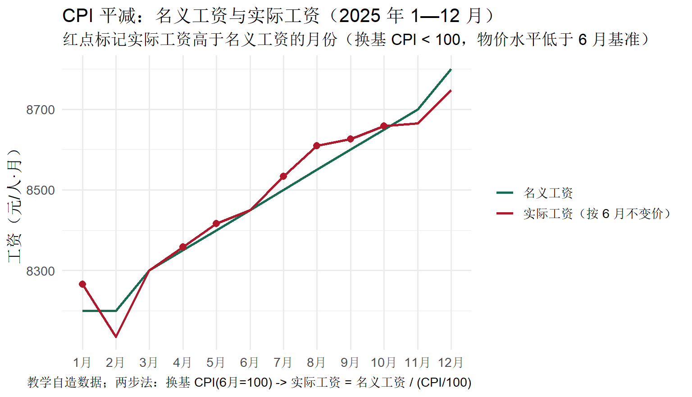

第九章 统计指数分析
《统计学原理》R 语言交互课件
# 《统计学原理》R 课件 · 公共配置 # 每个章节 qmd 通过 ```{r, file="_setup.R"} 方式引入 :: opts_chunk$ set (comment = "#>" ,collapse = TRUE ,out.width = "88%" ,fig.align = "center" ,fig.width = 8 ,fig.height = 5 ,fig.retina = 2 ,dev.args = list (family = "sans" )# 中文友好的 ggplot 主题 if (requireNamespace ("ggplot2" , quietly = TRUE )) {:: theme_set (:: theme_minimal (base_size = 14 ) + :: theme (plot.title = ggplot2:: element_text (face = "bold" ),panel.grid.minor = ggplot2:: element_blank ()# 讲义用统一调色板 <- c ("#1a6b54" , "#d97706" , "#2563eb" , "#c2410c" , "#7c3aed" , "#0891b2" )
第一节 统计指数及其种类
本节从指数的历史起源讲起，给出统计指数的广义与狭义概念，通过一个四商品例题引出个体指数、复杂现象总体与总指数等基本概念，并系统介绍指数的特点、作用、分类与常用符号，为后面各节的学习奠定基础。
指数的产生与发展
起源 ：最早的指数起源于 18 世纪 欧洲，最初是关于物价波动 的研究。
发展过程 ：
研究范围后来逐渐扩大到产量、成本、劳动生产率 等指数的计算；
计算内容由最初计算一种商品的价格变动 ，逐渐扩展到计算多种商品价格的综合变动 。
现状 ：至今，指数已被广泛应用于社会经济生活各个方面；一些重要的指数已成为社会经济发展的晴雨表 。
统计指数的概念：广义与狭义
指数 ：又称统计指数、经济指数。
广义上说 ：指数是对有关现象进行比较分析的一种相对指标。如发展速度、计划完成相对数、比较相对数等。
狭义上说 ：统计指数是反映不能直接相加 的复杂社会经济现象总体数量综合变动程度 的相对数，用以表明所研究现象在时间上的发展变化程度。
指数的基本计算公式 ：
\[\text{某现象的指数} = \frac{\text{某现象的报告期（计算期）水平}}{\text{基期水平}}\]
教学提示：理解狭义指数的关键在于两点——一是”不能直接相加”（复杂总体），二是”综合变动程度”（需通过指数编制方法实现综合对比）。广义指数即一般相对数，狭义指数才是本章研究的核心对象。
【例】四种商品的个体指数计算与”全部商品指数”的困境
要求 ：
（1）计算各种商品的价格指数和销售量指数； （2）计算全部商品的价格指数和销售量指数。
已知数据表 ：
大米
百公斤
300
360
2400
2600
猪肉
公斤
18
20
84000
95000
服装
件
100
130
24000
23000
冰箱
台
2500
2000
510
612
（1）各种商品的个体指数计算
个体价格指数（报告期价格与基期价格之比）：
\[K_p = \frac{p_1}{p_0}\]
大米的价格指数 \(= \dfrac{p_1}{p_0} = \dfrac{360}{300} = 120\%\)
猪肉的价格指数 \(= \dfrac{p_1}{p_0} = \dfrac{20}{18} = 111.11\%\)
个体销售量指数（报告期销售量与基期销售量之比）：
\[K_q = \frac{q_1}{q_0}\]
【例】四种商品的个体指数计算与”全部商品指数”的困境（续）
大米的销售量指数 \(= \dfrac{q_1}{q_0} = \dfrac{2600}{2400} = 108.33\%\)
猪肉的销售量指数 \(= \dfrac{q_1}{q_0} = \dfrac{95000}{84000} = 113.10\%\)
上述反映单一商品 （个体）价格或销售量变动程度的指数，称为个体指数 。
（2）全部商品的（总）价格指数与总销售量指数为何不能直接相加对比
若把各种商品的价格或销售量直接加总再对比：
\[\text{全部商品的价格指数} = \frac{\sum p_1}{\sum p_0} = \frac{360+20+130+2000}{300+18+100+2500} \quad (\times)\]
\[\text{全部商品的销售量指数} = \frac{\sum q_1}{\sum q_0} = \frac{2600+95000+23000+612}{2400+84000+24000+510} \quad (\times)\]
上面两个式子不可行，原因在于各种商品权重不同、单位不同 ，价格与销售量不能直接加总、不能直接综合对比。
由此引出两个概念：
复杂现象总体 ：不能直接加总或不能直接综合对比的现象。总指数 ：反映复杂现象总体综合变动状况的指数。
这就为下一节借助同度量因素编制综合指数埋下伏笔。
（狭义）指数的特点
1. 相对性 ：指数是总体变量在不同场合下对比形成的相对数 。
2. 综合性 ：指数反映的不是单一 事物的变动，而是多个个体构成的总体 的变动，是一种综合性数值。 例：商品价格指数综合了各种商品价格受各种因素综合影响变动的结果。
3. 平均性 ：指数是总体中各个体变化程度的一个代表性数值 ，即指数所反映的总体的变动只是一种平均意义上的变动 。
指数的作用
1. 综合比较的作用 ：反映复杂经济现象在时间或空间上的发展变化的方向和程度。
社会经济现象中，存在着大量不能直接加总 或不能直接对比 的复杂总体，想要反映它们的变动方向和变动程度，只能通过统计指数法，编制统计指数才能解决。
2. 因素分析的作用 ：指数可以分析受多因素影响的复杂社会经济现象总变动，以及各个因素的影响方向和影响程度。
指数的分类
指数可以从三个不同角度进行分类。
（一）按其涉及的对象范围不同分
个体指数 ：反映某一项目或单个事物变动的相对数；如一种商品的价格或销售量的变动。总指数（综合指数） ：反映多个项目或多个事物构成的复杂总体综合变动的相对数；如多种商品的价格或销售量的综合变动。类指数（组指数） ：介于个体指数与总指数之间，把研究对象分为几大类，观察大类现象变动的指数。
三者构成由个别到局部（类）再到整体的关系——个体指数考察单一项目，类指数考察某一类项目，总指数考察全部项目构成的总体的综合变动。
（二）按其说明对象的特征（指数化指标的性质）不同分
在统计指数理论中，将所要反映数量变动的那个指标称为指数化指标 。据此，统计指数可分为两类：
数量指标指数 ：反映说明总体在规模上、总量上 的数量变动；如产品产量指数、商品销售量指数等。质量指标指数 ：说明总体在比较关系上（或一般水平上） 的数量变动；如价格指数、产品成本指数等。
区分二者的关键是看指数化指标的性质——反映总体规模、总量水平变动的属于数量指标指数；反映总体一般水平、质量对比关系变动的属于质量指标指数。
（三）按基期不同，动态指数可分为
环比指数 ：在指数数列中，各期指数都以上期为对比基期 。定基指数 ：各期指数都以某一固定时期 为对比基期。
环比指数与定基指数的关系：
指数的分类（续）
\[\text{定基指数} = \text{环比指数的连乘积}\]
教学提示：个体指数可直接相互换算（连乘得到定基、相除得到环比）；总指数因同度量因素变动，一般不具备这种换算关系。
分类结构图：
指数的分类
┌──────────────┼──────────────┐
按对象范围分 按指数化指标性质分 按基期不同划分
┌──┴──┐ ┌──┴──┐ ┌──┴──┐
个体指数 总指数 数量指标指数 质量指标指数 环比指数 定基指数（图示说明：树状结构图系统展示指数的三种分类标准及其六种类型，帮助学生建立完整的指数分类知识框架。）
指数计算中常用符号的含义
在指数分析中，为书写简便，统一约定以下符号：
\(q\) 数量指标
\(p\) 质量指标
1
报告期
0
基期
\(K\) 个体指数
\(\bar{K}\) （\(\bar{I}\) ）总指数
\(\bar{K}_q\) （\(\bar{I}_q\) ）综合数量指标指数
\(\bar{K}_p\) （\(\bar{I}_p\) ）综合质量指标指数
教学说明 ：
\(q\) 与 \(p\) 分别代表两类指标：数量指标（如产量、销售量）反映总体规模，质量指标（如价格、单位成本）反映质量水平；下标 1 与 0 用于区分报告期与基期，如 \(q_1\) 表示报告期数量、\(p_0\) 表示基期价格；
个体指数用 \(K\) 表示对单个项目计算的指数；总指数用带上横线的 \(\bar{K}\) （\(\bar{I}\) ）表示对多种项目综合计算的指数；
总指数按指数化指标性质又分为综合数量指标指数 \(\bar{K}_q\) （如销售量总指数）与综合质量指标指数 \(\bar{K}_p\) （如价格总指数）。
掌握这些符号约定，是正确书写和计算各类指数公式的基础。
总指数的编制途径：综合与平均
如何反映复杂现象总体的数量变动？ 由于复杂现象总体的各个组成部分（如不同商品的价格、数量）不能直接相加，因此需要解决——如何编制总指数？
编制总指数有两种基本方法：
通过综合 的方法
综合指数
通过平均 的方法
平均指数
综合指数 ：借助同度量因素，把不能直接相加的复杂现象转化为可以相加的总量指标，然后对比求得总指数（先综合、后对比）；平均指数 ：对个体指数进行加权平均，从而求得总指数（先对比、后平均）。
（图示说明：层级示意图：从”如何反映复杂现象总体的数量变动？“引出”如何编制总指数？“，再分两支分别指向”综合指数”（通过综合的方法）与”平均指数”（通过平均的方法），直观展示总指数的两条编制途径。）
第二节 综合指数
本节围绕”先综合、后对比”的编制原理，介绍综合指数的定义、同度量因素的作用，依次学习拉氏指数、派氏指数以及马—埃公式、费雪公式、杨格公式等其他类型，并给出数量指标指数与质量指标指数的编制原则和完整例题。
【例】四种商品的销售资料与销售额计算表
为分析销售量与价格的综合变动，搜集大米、猪肉、服装、冰箱四种商品基期与报告期的价格、销售量资料，并预先计算四个口径的销售额（单位：百元）：
大米
百公斤
300
360
2400
2600
7200
9360
7800
8640
猪肉
公斤
18
20
84000
95000
15120
19000
17100
16800
服装
件
100
130
24000
23000
24000
29900
23000
31200
冰箱
台
2500
2000
510
612
12750
12240
15300
10200
合计
—
—
—
—
—
59070
70500
63200
66840
分析任务 ：
综合指数的编制原理：先综合，后对比（续）
\[I_q = \frac{q_1}{q_0} \;\xrightarrow{\times p}\; \frac{\sum q_1 p}{\sum q_0 p}\]
将同度量因素 \(p\) 分别固定在不同时期，得到三个综合形式：
\[\frac{\sum p_1 q_1}{\sum p_0 q_0} \quad (\text{销售额指数}), \qquad \frac{\sum p_0 q_1}{\sum p_0 q_0} \quad (p \text{ 固定于基期}), \qquad \frac{\sum p_1 q_1}{\sum p_1 q_0} \quad (p \text{ 固定于报告期})\]
被固定的 \(q\) 或 \(p\) 均为同度量因素 ：它一方面把不同度量的现象过渡成可以同度量的媒介因素（起同度量作用），另一方面必须固定在同一时期，才能单独观察指数化指标的变动。
（图示说明：公式演化示意图把个体指数经同度量因素过渡到综合形式的过程逐层展开，直观呈现”先综合、后对比”的编制原理。）
同度量因素与指数化指标
两个综合指数公式 ：
数量指标指数（销售量指数）：
\[I_q = \frac{\sum q_1 p_0}{\sum q_0 p_0}\]
质量指标指数（价格指数）：
\[I_p = \frac{\sum p_1 q_1}{\sum p_0 q_1}\]
在 \(I_q\) 中，\(q\) 被标注为指数化指标（指数化因素） ，\(p_0\) 被标注为同度量因素 。
在 \(I_p\) 中，\(p\) 被标注为指数化指标（指数化因素） ，\(q_1\) 被标注为同度量因素 。
概念定义 ：
同度量因素 ：指把不同度量的现象过渡成可以同度量的媒介因素，起到同度量的作用。指数化指标（指数化因素） ：指在指数分析中被研究的指标。
编制综合指数时，首先要确定指数化指标（被研究对象），再选择相应的同度量因素，将不能直接相加的指标过渡为可以直接加总对比的总量指标。
拉氏指数（L 式指数）
历史注记 ：拉氏指数由德国学者拉斯贝尔斯（Étienne Laspeyres）于 1864 年提出，“拉氏指数”“L 式指数”均由其姓氏而来。
拉氏指数或 L 式指数把同度量因素固定在基期 （基期加权综合指数），用上述四种商品数据（销售额单位：百元）计算：
1. 拉氏价格指数
\[L_p = \frac{\sum p_1 q_0}{\sum p_0 q_0} = \frac{66840}{59070} = 113.15\%\]
绝对数分析：\(\sum p_1 q_0 - \sum p_0 q_0 = 66840 - 59070 = 7770\) （百元）
2. 拉氏销售量指数
\[L_q = \frac{\sum q_1 p_0}{\sum q_0 p_0} = \frac{\sum p_0 q_1}{\sum p_0 q_0} = \frac{63200}{59070} = 106.99\%\]
绝对数分析：\(\sum p_0 q_1 - \sum p_0 q_0 = 63200 - 59070 = 4130\) （百元）
读法 ：拉氏价格指数表明，四种商品价格综合上涨 13.15%，按基期销售量计算使销售额增加 7770 百元；拉氏销售量指数表明销售量综合增长 6.99%，按基期价格计算使销售额增加 4130 百元。
派氏指数（P 式指数）
历史注记 ：派氏指数由德国学者帕舍（Hermann Paasche）于 1874 年提出，“派氏/P 式”与”帕氏指数”均为其姓氏的不同音译。注意规范拼写为 Paasche （双 a 双 s）；个别文献写作”帕煦（Pasche）“系拼写之误，Paasche 与 Laspeyres 也绝非一人，引用外文公式名称时按 Laspeyres index、Paasche index 为准。
派氏指数或 P 式指数把同度量因素固定在报告期 （报告期加权综合指数），仍用前例四种商品数据（销售额单位：百元）计算：
1. 派氏价格指数
\[P_p = \frac{\sum p_1 q_1}{\sum p_0 q_1} = \frac{70500}{63200} = 111.55\%\]
绝对数分析：\(\sum p_1 q_1 - \sum p_0 q_1 = 70500 - 63200 = 7300\) （百元）
2. 派氏销售量指数
\[P_q = \frac{\sum q_1 p_1}{\sum q_0 p_1} = \frac{\sum p_1 q_1}{\sum p_1 q_0} = \frac{70500}{66840} = 105.48\%\]
绝对数分析：\(\sum q_1 p_1 - \sum q_0 p_1 = 70500 - 66840 = 3660\) （百元）
派氏指数（P 式指数）（续）
读法 ：派氏价格指数表明，按报告期销售量计算，四种商品价格综合上涨 11.55%，使销售额增加 7300 百元；派氏销售量指数表明，按报告期价格计算，销售量综合增长 5.48%，使销售额增加 3660 百元。
拉氏指数与派氏指数的比较与一般选择原则
1. 分析的经济意义不完全相同
拉氏指数与派氏指数各自选取的同度量因素不同：
\[L_p = \frac{\sum q_0 p_1}{\sum q_0 p_0} \quad (\text{同度量因素固定在基期}) \qquad P_p = \frac{\sum q_1 p_1}{\sum q_1 p_0} \quad (\text{同度量因素固定在报告期})\]
因此两套公式分别按基期、报告期的权数加权，说明的现象变动内容与经济意义不完全相同。
2. 一般选择原则
一般地，计算数量指标指数 采用 L 式 （拉氏指数，同度量因素固定在基期）；
计算质量指标指数 采用 P 式 （派氏指数，同度量因素固定在报告期）。
记忆口诀：“垃圾数、派报纸” ——“拉”氏指数对应”数”量指标指数，“派”氏指数对应”报”价（质量指标）指数。
综合指数的其他类型
（一）马歇尔——埃奇沃斯指数（马—埃公式）
马—埃公式把同度量因素（权数）取为基期与报告期的简单算术平均 ：
价格指数（马—埃公式）：
\[E_p = \frac{\sum p_1 \cdot \dfrac{q_0+q_1}{2}}{\sum p_0 \cdot \dfrac{q_0+q_1}{2}} = \frac{\sum p_1 (q_0+q_1)}{\sum p_0 (q_0+q_1)} = \frac{\sum p_1 q_0 + \sum p_1 q_1}{\sum p_0 q_0 + \sum p_0 q_1}\]
销售量指数（马—埃公式）：
\[E_q = \frac{\sum q_1 \cdot \dfrac{p_0+p_1}{2}}{\sum q_0 \cdot \dfrac{p_0+p_1}{2}} = \frac{\sum q_1 (p_0+p_1)}{\sum q_0 (p_0+p_1)} = \frac{\sum q_1 p_0 + \sum q_1 p_1}{\sum q_0 p_0 + \sum q_0 p_1}\]
说明 ：马—埃公式是对拉氏指数和帕氏指数的权数（同度量因素）进行平均（权交叉）的结果。
（二）理想指数（费雪公式）
费雪公式取拉氏指数与派氏指数的几何平均 ：
价格指数（费雪公式）：
综合指数的其他类型（续）
\[F_p = \sqrt{L_p \times P_p} = \sqrt{\frac{\sum q_1 p_1}{\sum q_1 p_0} \times \frac{\sum q_0 p_1}{\sum q_0 p_0}}\]
销售量指数（费雪公式）：
\[F_q = \sqrt{L_q \times P_q} = \sqrt{\frac{\sum p_1 q_1}{\sum p_1 q_0} \times \frac{\sum p_0 q_1}{\sum p_0 q_0}}\]
说明 ：“理想公式”是对拉氏指数和派氏指数所求的几何平均数。由（美）Fisher 提出，能通过他本人提出的对指数公式测验的重要要求，自称为理想公式。
（三）固定加权综合指数——杨格公式
杨格公式把同度量因素固定在某一特定时期 \(n\) （固定权数）：
\[\bar{I}_p = \frac{\sum p_1 q_n}{\sum p_0 q_n} \qquad \bar{I}_q = \frac{\sum q_1 p_n}{\sum q_0 p_n}\]
其中 \(p_n\) 、\(q_n\) 表示某一固定时期的价格/销售量水平，在对比期内保持不变。
我国的工业生产指数 ：我国的工业生产指数采用固定加权综合指数（不变价格）编制，例如 2000 年各种工业品产量与 1995 年相比：
综合指数的其他类型（续）
\[I_q = \frac{\sum q_{2000}\, p_{1990}}{\sum q_{1995}\, p_{1990}}\]
即以某固定年份（如 1990 年）的不变价格 \(p_n\) 作为同度量因素，只反映各种工业品产量的综合变动。
【例】三种商品销售量综合指数的计算
例题 ：某商场三种商品的销售量和价格资料如下：
甲
只
1200
1500
3.6
4.0
乙
公斤
1500
2000
2.3
2.4
丙
件
500
600
9.8
10.6
要求 ：计算三种商品的销售量综合指数 。
以基期价格 \(p_0\) 为同度量因素（拉氏公式）：
\[I_q = \frac{\sum q_1 p_0}{\sum q_0 p_0} = \frac{\text{报告期销售商品按基期价格计算的销售总额}}{\text{基期销售总额}}\]
代入三种商品数据：
\[I_q = \frac{1500 \times 3.6 + 2000 \times 2.3 + 600 \times 9.8}{1200 \times 3.6 + 1500 \times 2.3 + 500 \times 9.8} = \frac{15880}{12670} = 125.34\%\]
结果表示 ：
（a）三种商品的销售量平均增加了 25.34% ；
【例】三种商品销售量综合指数的计算（续）
（b）销售量变化对销售总额的影响： - 由于销售量增加 25.34% 而使销售总额相应增加 25.34%； - 由于销售量增加而使销售总额增加的绝对额 \(= 3210\) （元） （\(15880 - 12670 = 3210\) ）。
质量指标指数的编制原则与例题计算
编制原则 ：在编制质量指标指数时，应该以报告期的数量指标 作为同度量因素。即
\[I_p = \frac{\sum q_1 p_1}{\sum q_1 p_0}\]
例题 ：仍用上例某商场三种商品的销售量和价格资料，计算三种商品的价格综合指数 。
以报告期销售量 \(q_1\) 为同度量因素（派氏公式）：
\[I_p = \frac{\sum q_1 p_1}{\sum q_1 p_0} = \frac{\text{报告期销售总额}}{\text{报告期销售商品按基期价格计算的销售总额}}\]
代入三种商品数据：
\[I_p = \frac{1500 \times 4.0 + 2000 \times 2.4 + 600 \times 10.6}{1500 \times 3.6 + 2000 \times 2.3 + 600 \times 9.8} = \frac{17160}{15880} = 108.06\%\]
结果表示 ：
（a）三种商品的价格平均上涨了 8.06% ；
（b）价格变化对销售总额的影响： - 由于价格上升 8.06% 而使销售总额相应增加 8.06%； - 由于价格上升而使销售总额增加的绝对额 \(= 1280\) （元） （\(17160 - 15880 = 1280\) ）。
质量指标指数的编制原则与例题计算（续）
本节配套上机任务见《新增实践 · ch09》实践块 1：三商品数据的拉氏/派氏指数与第三节 A–H 八情景公式的 R 向量化计算对照。
第三节 平均指数
本节介绍编制总指数的第二条途径——平均指数。它以个体指数为基础，通过加权平均得到总指数，本节学习其概念、计算形式、作为综合指数变形的两种平均法指数以及固定权数的平均法指数，并与综合指数作系统比较。
平均指数的概念：“先对比，后平均”
平均指数 是对个体指数进行加权平均 来求总指数的方法。其计算方法是：首先计算所研究现象的个体指数 （对比），然后再以某种指标为权数 进行加权平均而得。
与综合指数相同，平均指数也是总指数的基本形式之一，用来反映复杂现象的变动。
平均指数编制的基本方法是”先对比，后平均 ”：
“先对比”指先通过对比计算个体现象的个体指数；
“后平均”指将个体指数赋予适当的权数，加以平均得到总指数。
作为综合指数变形的加权算术平均法指数
以基期总额（\(q_0p_0\) ）为权数 ，只有用 \(q_0p_0\) 这个特殊权数加权计算，平均指数才可以变形成综合指数。除此之外不会等于综合指数，这是平均指数的独立意义所在。
加权算术平均法指数多用于数量指标指数 ；
对于同一资料，计算结果和经济意义与综合指数相同；
平均指数是总指数的另一重要形式。
例题 ：某企业生产三种产品的有关数据如下，试计算三种商品产量的综合变动情况。
甲
件
200
220
1.14
1.03
乙
台
50
50
1.05
0.98
丙
箱
120
150
1.20
1.10
以基期总成本 \(q_0p_0\) 为权数，对个体产量指数 \(k_q = q_1/q_0\) 加权算术平均：
作为综合指数变形的加权算术平均法指数（续）
\[I_q = \frac{\sum k_q \, q_0 p_0}{\sum q_0 p_0} = \frac{1.03 \times 200 + 0.98 \times 50 + 1.10 \times 120}{200 + 50 + 120} = \frac{387}{370} = 104.59\%\]
结论 ：报告期与基期相比，三种产品的产量平均提高了 4.59% ；由于产量增加使总成本增加 4.59%，由此而增加的总成本 \(= 387 - 370 = 17\) （万元）。
作为综合指数变形的调和平均法指数
以报告期总量（\(q_1p_1\) ）为权数 ，对个体指数加权调和平均 ：
\[I_p = \frac{\sum q_1 p_1}{\sum \dfrac{q_1 p_1}{p_1 / p_0}} = \frac{\sum q_1 p_1}{\sum \left( \dfrac{p_0}{p_1} \right) q_1 p_1} = \frac{\sum q_1 p_1}{\sum q_1 p_0}\]
（公式编号 10-17）
要点 ：
只有用 \(q_1p_1\) 这个特殊权数加权计算，平均指数才可以变形成综合指数，除此之外，这种关系不存在；
调和平均法指数多用于质量指标指数 ；
对于同一资料，计算结果和经济意义与综合指数相同。
例题 ：某企业生产三种产品的数据同上例，试计算三种商品成本的综合变动情况。
以报告期总成本 \(q_1p_1\) 为权数，对个体成本指数 \(k_p = p_1/p_0\) 加权调和平均：
\[I_p = \frac{\sum q_1 p_1}{\sum \dfrac{q_1 p_1}{k_p}} = \frac{220 + 50 + 150}{\dfrac{220}{1.14} + \dfrac{50}{1.05} + \dfrac{150}{1.20}} = \frac{420}{365.60} = 114.88\%\]
作为综合指数变形的调和平均法指数（续）
结论 ：报告期与基期相比，三种产品的单位成本平均提高了 14.88% ；由于单位成本上升使总成本增加 14.88%，由于单位成本增加而增加的总成本 \(= (420 - 365.60)\) 万元。
权数—资料条件匹配与情景变式训练
前面两小节分别用基期总额 \(q_0p_0\) 加权的算术平均、报告期总额 \(q_1p_1\) 加权的调和平均”还原”出了综合指数。一个自然的问题是：如果统计员手里掌握的是别的口径的资料呢？ 本小节引入权数的双下标记号，给出”资料条件 × 平均形式 × 权数”的完整匹配表，再用本章自己的数据做三个课堂变式，把”平均指数是综合指数的变形”从一句结论变成可验证的体验。
一、权数的双下标记号
加权平均指数的权数是两个有内在联系变量的乘积（如销售额 \(=\) 价格 \(\times\) 销售量），既可以是同期 变量的乘积，也可以是混合时期 变量的乘积。引入双下标记号（第一个下标标记 \(q\) 的时期、第二个下标标记 \(p\) 的时期）：
\[f_{00} = q_0p_0, \qquad f_{01} = q_0p_1, \qquad f_{10} = q_1p_0, \qquad f_{11} = q_1p_1\]
配套的个体指数记号：\(k_q = q_1/q_0\) （个体数量指数）、\(k_p = p_1/p_0\) （个体质量指数）。
二、资料条件 × 平均形式 × 权数匹配表
能作为”变形目标”的综合指数只有四个，每个都是”分子合计 ÷ 分母合计”的结构：
权数—资料条件匹配与情景变式训练（续）
拉氏数量指数 \(L_q\)
\(\dfrac{\sum q_1p_0}{\sum q_0p_0} = \dfrac{\sum f_{10}}{\sum f_{00}}\)
拉氏质量指数 \(L_p\)
\(\dfrac{\sum p_1q_0}{\sum p_0q_0} = \dfrac{\sum f_{01}}{\sum f_{00}}\)
派氏数量指数 \(P_q\)
\(\dfrac{\sum q_1p_1}{\sum q_0p_1} = \dfrac{\sum f_{11}}{\sum f_{01}}\)
派氏质量指数 \(P_p\)
\(\dfrac{\sum p_1q_1}{\sum p_1q_0} = \dfrac{\sum f_{11}}{\sum f_{10}}\)
于是已知哪个口径的 \(f\) ，就能还原哪个指数 ，平均形式由权数在目标指数中的位置决定——已知权数位于目标指数的分母 时用加权算术平均 ，位于分子 时用加权调和平均 。按此规则共得八个情景（编号 A–H）：
权数—资料条件匹配与情景变式训练（续）
A
基期总额 \(f_{00}\) + \(k_q\)
算术
\(\dfrac{\sum k_q f_{00}}{\sum f_{00}}\) 拉氏数量 \(L_q\)
\(A_q(L)\)
B
基期总额 \(f_{00}\) + \(k_p\)
算术
\(\dfrac{\sum k_p f_{00}}{\sum f_{00}}\) 拉氏质量 \(L_p\)
\(A_p(L)\)
C
混合总额 \(f_{01}\) + \(k_q\)
算术
\(\dfrac{\sum k_q f_{01}}{\sum f_{01}}\) 派氏数量 \(P_q\)
\(A_q(P)\)
D
混合总额 \(f_{10}\) + \(k_p\)
算术
\(\dfrac{\sum k_p f_{10}}{\sum f_{10}}\) 派氏质量 \(P_p\)
\(A_p(P)\)
E
混合总额 \(f_{10}\) + \(k_q\)
调和
\(\dfrac{\sum f_{10}}{\sum f_{10}/k_q}\) 拉氏数量 \(L_q\)
\(H_q(L)\)
F
混合总额 \(f_{01}\) + \(k_p\)
调和
\(\dfrac{\sum f_{01}}{\sum f_{01}/k_p}\) 拉氏质量 \(L_p\)
\(H_p(L)\)
G
报告期总额 \(f_{11}\) + \(k_q\)
调和
\(\dfrac{\sum f_{11}}{\sum f_{11}/k_q}\) 派氏数量 \(P_q\)
\(H_q(P)\)
H
报告期总额 \(f_{11}\) + \(k_p\)
调和
\(\dfrac{\sum f_{11}}{\sum f_{11}/k_p}\) 派氏质量 \(P_p\)
\(H_p(P)\)
权数—资料条件匹配与情景变式训练（续）
以情景 A 为例验证变形机制：\(\sum k_q f_{00} = \sum \dfrac{q_1}{q_0} \cdot q_0p_0 = \sum q_1p_0\) ，故 \(A_q(L) = \dfrac{\sum q_1p_0}{\sum q_0p_0} = L_q\) ；其余七个情景同理（如情景 H 的分母 \(\sum f_{11}/k_p = \sum \dfrac{q_1p_1}{p_1/p_0} = \sum q_1p_0\) ，故 \(H_p(P) = \dfrac{\sum q_1p_1}{\sum q_1p_0} = P_p\) ）。由此可见：同一个综合指数可由两套资料条件、两种平均形式还原出来 （A 与 E 同得 \(L_q\) ，B 与 F 同得 \(L_p\) ，C 与 G 同得 \(P_q\) ，D 与 H 同得 \(P_p\) ）。本节前文的两类标准变形正是表中 A 行（算术、基期权数，多用于数量指标指数）与 H 行（调和、报告期权数，多用于质量指标指数）。
公式选择三问 ：拿到”部分产值 + 个体指数”型资料时依次自问——①目标指数是哪一个（拉氏还是派氏、数量还是质量）？②已知权数是哪个口径（\(f_{00}\) 、\(f_{01}\) 、\(f_{10}\) 、\(f_{11}\) ）？③该权数在目标指数的分母还是分子？分母用算术平均、分子用调和平均，对号入座即可。
三、情景变式训练（用本章自己的数据）
权数—资料条件匹配与情景变式训练（续）
以下三个变式的数据底座分别是第二节三商品商场例题与第四节粮油市场例题。同一个数据底座，每次只换”已知的资料条件” ：请先遮住解答，判断该用哪个情景的公式，动笔计算后再与综合指数结果对照。
数据底座（三商品商场，单位：元） ：四个口径的销售额为
\(q_0p_0\) 4320
3450
4900
12670
\(\sum f_{00}\)
\(q_1p_0\) 5400
4600
5880
15880
\(\sum f_{10}\)
\(q_0p_1\) 4800
3600
5300
13700
\(\sum f_{01}\)
\(q_1p_1\) 6000
4800
6360
17160
\(\sum f_{11}\)
个体销售量指数 \(k_q\) ：甲 \(\dfrac{1500}{1200}=125\%\) 、乙 \(\dfrac{2000}{1500}=133.33\%\) 、丙 \(\dfrac{600}{500}=120\%\) ；个体价格指数 \(k_p\) ：甲 \(\dfrac{4.0}{3.6}=111.11\%\) 、乙 \(\dfrac{2.4}{2.3}=104.35\%\) 、丙 \(\dfrac{10.6}{9.8}=108.16\%\) 。
权数—资料条件匹配与情景变式训练（续）
变式一（情景 A 型） ：统计员只留下基期销售台账和三类商品的个体销售量指数——基期销售额 \(f_{00}\) ：甲 4320 元、乙 3450 元、丙 4900 元；\(k_q\) ：甲 \(1.25\) 、乙 \(1.3333\) 、丙 \(1.20\) 。求销售量总指数。
判断：已知 \(f_{00}\) + \(k_q\) ，\(f_{00}\) 是 \(L_q\) 的分母 → 情景 A，加权算术平均：
\[A_q(L) = \frac{\sum k_q f_{00}}{\sum f_{00}} = \frac{1.25 \times 4320 + 1.3333 \times 3450 + 1.20 \times 4900}{4320 + 3450 + 4900} = \frac{5400 + 4600 + 5880}{12670} = \frac{15880}{12670} = 125.34\%\]
殊途同归 ：与第二节直接用拉氏公式 \(I_q = \dfrac{\sum q_1p_0}{\sum q_0p_0}\) 算得的 \(125.34\%\) 完全一致，影响绝对额同为 \(15880 - 12670 = 3210\) （元）——一张报告期销售量表都没有，照样还原出综合指数。
权数—资料条件匹配与情景变式训练（续）
变式二（情景 H 型） ：换一位统计员，手里只有报告期销售报表和个体价格指数——\(f_{11}\) ：甲 6000 元、乙 4800 元、丙 6360 元；\(k_p\) ：甲 \(1.1111\) 、乙 \(1.0435\) 、丙 \(1.0816\) 。求价格总指数。
判断：已知 \(f_{11}\) + \(k_p\) ，\(f_{11}\) 是 \(P_p\) 的分子 → 情景 H，加权调和平均：
\[H_p(P) = \frac{\sum f_{11}}{\sum f_{11}/k_p} = \frac{6000 + 4800 + 6360}{\dfrac{6000}{1.1111} + \dfrac{4800}{1.0435} + \dfrac{6360}{1.0816}} = \frac{17160}{5400 + 4600 + 5880} = \frac{17160}{15880} = 108.06\%\]
殊途同归 ：与第二节派氏价格指数 \(108.06\%\) 、影响额 1280 元完全一致。注意调和平均的分母 \(\sum f_{11}/k_p\) 把报告期销售额逐项”除以个体指数”折回了 \(\sum q_1p_0\) ——这正是变形的关键一步。
权数—资料条件匹配与情景变式训练（续）
变式三（情景 B 型，粮油市场数据） ：第四节粮油市场例题只算了派氏价格指数 \(102.44\%\) 。若统计员掌握的是基期 销售额和个体价格指数——\(f_{00}\) ：粳米 312000 元、标准粉 345000 元、花生油 14700 元；\(k_p\) ：粳米 \(1.1538\) 、标准粉 \(0.9130\) 、花生油 \(1.0714\) 。求拉氏价格指数。
判断：已知 \(f_{00}\) + \(k_p\) ，\(f_{00}\) 是 \(L_p\) 的分母 → 情景 B，加权算术平均：
\[A_p(L) = \frac{\sum k_p f_{00}}{\sum f_{00}} = \frac{1.1538 \times 312000 + 0.9130 \times 345000 + 1.0714 \times 14700}{312000 + 345000 + 14700} = \frac{360000 + 315000 + 15750}{671700} = \frac{690750}{671700} = 102.84\%\]
权数—资料条件匹配与情景变式训练（续）
即按基期销售量加权，三种粮油价格综合上涨 \(2.84\%\) ，影响绝对额 \(690750 - 671700 = 19050\) （元）。与已有的派氏结果对照：\(L_p = 102.84\% > P_p = 102.44\%\) ——涨价的粳米（\(+15.38\%\) ）在基期权数中占 \(46.4\%\) ，在派氏（报告期销售量）权数中降为 \(45.1\%\) ；降价的标准粉（\(-8.70\%\) ）权重则由 \(51.4\%\) 升至 \(53.1\%\) 。权数结构的变化使派氏低于拉氏，这从数据上印证了第二节”两套公式的经济意义不完全相同”的论断：资料条件（权数口径）本身就在影响测算结果 ，报告测算结果时必须交代按哪一期权数加权。
权数—资料条件匹配与情景变式训练（续）
教师参考框 ：胡华平课件以同一套企业三产品数据（\(\sum f_{00}=745.6\) 万元、\(\sum f_{10}=873.2\) 万元、\(\sum f_{01}=821.6\) 万元、\(\sum f_{11}=962.0\) 万元）对 A–H 八个情景逐一做了”数据表 → 判断 → 解答”的完整推演（每个情景两页，如情景 A 得 \(117.11\%\) 、情景 G 得 \(117.09\%\) ），课堂需要更多变式时可直接取用。引用其结果页时注意四处排版误植：p20 帕氏质量指数的差额误标 \(\Delta p(L)\) （应为 \(\Delta p(P)\) ）；p44 标题误写”加权算数平均”而实际公式为调和平均 \(H_p(L)\) ；p46 帕氏调和数量指数的结果页误标代号 \(A_q(P)\) （应为 \(H_q(P)\) ）；p13 将帕氏指数英文名误拼为”Paasche Laspeyres index”（两种指数混拼为一词）——引用时按本节匹配表的代号与本讲义的规范拼写为准。
本节配套上机任务见《新增实践 · ch09》实践块 1：A–H 八情景公式的 R 向量化计算与”殊途同归”对照。
R 实践 · 八情景公式选择的向量化计算
讲义第三节的匹配表给出 A–H 八个情景：已知权数在目标指数分母 用加权算术平均 \(A=\sum k f/\sum f\) ，在分子 用加权调和平均 \(H=\sum f/\sum(f/k)\) 。用向量运算一次性算完八个情景，并与四个综合指数直接对照——“殊途同归”当场可见。
# 三商品商场数据（讲义第二节例题） <- c (1200 , 1500 , 500 ) # 基期销售量 <- c (1500 , 2000 , 600 ) # 报告期销售量 <- c (3.6 , 2.3 , 9.8 ) # 基期价格 <- c (4.0 , 2.4 , 10.6 ) # 报告期价格 <- q0 * p0 # c(4320, 3450, 4900) 合计 12670 <- q0 * p1 # c(4800, 3600, 5300) 合计 13700 <- q1 * p0 # c(5400, 4600, 5880) 合计 15880 <- q1 * p1 # c(6000, 4800, 6360) 合计 17160 <- q1 / q0 # 个体销售量指数 <- p1 / p0 # 个体价格指数
# 第二节两行验证：拉氏销售量指数与派氏价格指数（讲义手算 125.34%、108.06%） round (c (Lq = sum (f10) / sum (f00), Pp = sum (f11) / sum (f10)), 4 )#> Lq Pp #> 1.2534 1.0806 #> Lq Pp #> 1.2534 1.0806 # 八情景速查函数：arith = 加权算术平均，harm = 加权调和平均 <- function (k, f) sum (k * f) / sum (f) # 等价于 weighted.mean(k, f) <- function (k, f) sum (f) / sum (f / k)<- data.frame (scenario = LETTERS[1 : 8 ],known = c ("f00+kq" , "f00+kp" , "f01+kq" , "f10+kp" ,"f10+kq" , "f01+kp" , "f11+kq" , "f11+kp" ),form = rep (c ("算术" , "调和" ), each = 4 ),value = c (arith (kq, f00), arith (kp, f00), arith (kq, f01), arith (kp, f10),harm (kq, f10), harm (kp, f01), harm (kq, f11), harm (kp, f11)),target = rep (c ("Lq" , "Lp" , "Pq" , "Pp" ), 2 )$ percent <- round (100 * tab$ value, 2 )#> scenario known form value target percent #> 1 A f00+kq 算术 1.253354 Lq 125.34 #> 2 B f00+kp 算术 1.081294 Lp 108.13 #> 3 C f01+kq 算术 1.252555 Pq 125.26 #> 4 D f10+kp 算术 1.080605 Pp 108.06 #> 5 E f10+kq 调和 1.253354 Lq 125.34 #> 6 F f01+kp 调和 1.081294 Lp 108.13 #> 7 G f11+kq 调和 1.252555 Pq 125.26 #> 8 H f11+kp 调和 1.080605 Pp 108.06 #> scenario known form value target percent #> 1 A f00+kq 算术 1.2534 Lq 125.34 <- 讲义变式一 #> 2 B f00+kp 算术 1.0813 Lp 108.13 <- 讲义变式三（粮油数据同型） #> 3 C f01+kq 算术 1.2526 Pq 125.26 #> 4 D f10+kp 算术 1.0806 Pp 108.06 #> 5 E f10+kq 调和 1.2534 Lq 125.34 #> 6 F f01+kp 调和 1.0813 Lp 108.13 #> 7 G f11+kq 调和 1.2526 Pq 125.26 #> 8 H f11+kp 调和 1.0806 Pp 108.06 <- 讲义变式二
# 殊途同归验证：A=E、B=F、C=G、D=H，且各自等于直接计算的综合指数 <- c (Lq = sum (f10) / sum (f00),Lp = sum (f01) / sum (f00),Pq = sum (f11) / sum (f01),Pp = sum (f11) / sum (f10))all.equal (tab$ value[1 ], comp[["Lq" ]]) # A = Lq：TRUE（用 [[ 取元素，避免携带名字属性） #> [1] TRUE all.equal (tab$ value[8 ], comp[["Pp" ]]) # H = Pp：TRUE #> [1] TRUE round (comp, 4 )#> Lq Lp Pq Pp #> 1.2534 1.0813 1.2526 1.0806 #> Lq Lp Pq Pp #> 1.2534 1.0813 1.2526 1.0806
情景 A 得 125.34%、情景 H 得 108.06%，与讲义第二节的拉氏销售量指数、派氏价格指数手算值完全一致；情景 B 的 108.13% 即讲义变式三粮油数据的同型公式（三商品口径的拉氏价格指数）。上机时可以任意”扣掉”一个 \(f\) 口径，只留个体指数与另一个口径，再选对公式复算——这正是八情景训练的玩法。作业与考试仍按讲义手算书写，软件用于验证与探索。
试试只用 f11 与 kq 求销售量 总指数（情景 G）：harm(kq, f11) 得 1.2526，即派氏数量指数 \(P_q\) ；再用 arith(kq, f01)（情景 C）对照，两者理应相等。若误用了算术形式 arith(kq, f11)，会得到一个不属于任何综合指数的数值——体会”权数在分子必须用调和平均”这条规则为什么不能违反。
固定权数的平均法指数
固定权数平均法指数 的特点：
权数不随基期或报告期改变而改变 ，在较长时间内固定不变；
权数一般用比重形式 （\(w\) ，\(\sum w = 100\%\) 或 \(1\) ）；
便于长期对比 ，不受权数变化的影响；
既可用于数量指标指数，也可用于质量指标指数 。
计算公式为固定加权算术平均形式：
\[I_q = \frac{\sum I_q w}{\sum w}\]
其中 \(I_q\) 为个体（类）指数，\(w\) 为固定权数。
平均指数不仅仅是综合指数的变形 ，在许多场合下它还是一种相对独立的总指数编制方法 ，具有比综合指数更广泛的适用性。
平均指数与综合指数的区别
⒈ 解决复杂总体不能直接同度量问题的思想 不同
先综合，后对比 先对比，后综合
⒉ 运用资料的条件 不同
需具备研究总体的全面资料
同时适用于全面、非全面资料
⒊ 在经济分析中的具体作用 不同
可同时进行相对分析与绝对分析
除作为综合指数变形加以应用的情况外，一般只能进行相对分析
第四节 指数体系与因素分析
本节是全章的核心与落脚点：先建立指数体系的概念与相对数、绝对数两方面关系，再利用指数体系进行指数间的相互推算，进而系统学习总量指标的两因素与多因素分析、平均指标的因素分析，并通过一系列完整例题掌握操作步骤。
四步解题模板 ：本节两因素、多因素、平均指标三类因素分析的例题，统一按四步展开——步骤 1 建立指数体系（确定分解公式）；步骤 2 计算总变动指数与各因素指数；步骤 3 相对数分解验证（对象指数 = 各因素指数之积）；步骤 4 绝对数分解验证（总差额 = 各因素影响差额之和）。读例题与做作业时都按此四步对号入座，形成稳定的解题心智模型。
指数体系的概念
指数体系 ：经济上有一定联系、数量上保持一定对等关系的若干指数构成的有机整体 。
例如：
\[\text{销售额指数} = \text{销售量指数} \times \text{价格指数}\]
\[\text{总成本指数} = \text{总产量指数} \times \text{单位产品成本指数}\]
在体系中，等式左边的指数（如销售额指数、总成本指数）称为对象指数 ，等式右边的各因素指数（如销售量指数、价格指数）称为因素指数 。
指数体系的具体内容：相对数与绝对数关系
以销售额指数体系为例：
\[\frac{\sum q_1 p_1}{\sum q_0 p_0} = \frac{\sum q_1 p_0}{\sum q_0 p_0} \times \frac{\sum q_1 p_1}{\sum q_1 p_0}\]
1、相对数关系 ：某一现象的总量（变动）指数等于其各个影响因素指数的乘积，即
\[\text{销售额指数} = \text{销售量指数} \times \text{价格指数}\]
2、绝对数关系 ：总量变动的绝对差额等于各因素变动的影响差额之和，即
\[\sum q_1 p_1 - \sum q_0 p_0 = \left( \sum q_1 p_0 - \sum q_0 p_0 \right) + \left( \sum q_1 p_1 - \sum q_1 p_0 \right)\]
（前一括号为销售量变动的影响差额，后一括号为价格变动的影响差额。）
【例】三种商品销售额指数体系的验证
利用第二节某商场三种商品的销售量和价格资料：
甲
只
1200
1500
3.6
4.0
乙
公斤
1500
2000
2.3
2.4
丙
件
500
600
9.8
10.6
销售额 \(=\) 销售量 \(\times\) 销售价格，其指数体系为销售额指数 \(=\) 销售量指数 \(\times\) 销售价格指数。
验证 ：代入第二节例题的计算结果：
\[135.44\% = 125.34\% \times 108.06\%\]
绝对数关系：
\[\left( 17160 - 12670 \right) = \left( 15880 - 12670 \right) + \left( 17160 - 15880 \right)\]
\[4490 = 3210 + 1280\]
即三种商品销售额共增加 4490 元，其中由于销售量增长使销售额增加 3210 元，由于价格上升使销售额增加 1280 元，相对数关系与绝对数关系均得到验证。
指数体系的作用（一）：指数间的相互推算
利用指数体系，可进行指数之间的相互推算：利用已知的指数推算未知的指数。
【例 1】 已知某地区商品价格报告期比基期增长 5%，销售量增长 2%，求该地区商品销售总额的增长幅度。
解 ：已知 \(\bar{K}_P = 1 + 5\%\) ，\(\bar{K}_Q = 1 + 2\%\) ，则
\[k_{PQ} = \bar{K}_P \times \bar{K}_Q = (1 + 5\%) \times (1 + 2\%) = 107.1\%\]
即销售总额增长了 7.1%。
【例 2】 已知同样多的人民币，报告期比基期少购买 7% 的商品，问物价指数是多少？
解 ：由指数体系
\[\text{购买额指数} = \text{购买量指数} \times \text{物价指数}\]
（同样多的人民币即购买额指数为 100%，购买量指数为 \(1 - 7\% = 93\%\) ）
\[\text{物价指数} = \text{购买额指数} \div \text{购买量指数} = 100\% \div (1 - 7\%) = 107.5\%\]
即物价上涨了 7.5%。
【例 3】 已知某企业产值报告期比基期增长了 24%，职工人数增长了 17%，问劳动生产率如何变化？
解 ：由指数体系
\[\text{工业总产值指数} = \text{职工人数指数} \times \text{劳动生产率指数}\]
于是
指数体系的作用（一）：指数间的相互推算（续）
\[\text{劳动生产率提高程度百分比} = \text{工业总产值指数} \div \text{职工人数指数} - 1\]
\[= (1 + 24\%) \div (1 + 17\%) - 1 = 5.98\%\]
即该企业劳动生产率提高了 5.98%。
【例 4】零售额变动的因素推算与影响绝对值分析
题目 ：某市 2008 年社会商品零售额 12,000 万元，2009 年增加为 15,600 万元。物价指数提高了 4%，试计算零售量指数，并分析零售量和物价因素变动对零售总额变动的影响绝对值。
（依据的指数关系：零售额 \(=\) 零售量 \(\times\) 物价，即零售额指数 \(=\) 零售量指数 \(\times\) 物价指数。）
解 ：已知：\(\sum p_0 q_0 = 12000\) 万元（2008 年零售额），\(\sum p_1 q_1 = 15600\) 万元（2009 年零售额），物价指数 \(= 104\%\) 。
物价指数（派氏形式）为
\[\frac{\sum p_1 q_1}{\sum p_1 q_0} = 104\%\]
则按报告期价格计算的基期假定零售额
\[\sum p_1 q_0 = 15600 \div 104\% = 15000 \text{（万元）}\]
于是零售量指数
\[\frac{\sum p_1 q_0}{\sum p_0 q_0} = \frac{15000}{12000} = 125\%\]
即该市零售量增长了 25%。
影响绝对值的因素分析 ：
零售量变动影响的零售额：
\[\sum q_1 p_0 - \sum q_0 p_0 = 15000 - 12000 = 3000 \text{（万元）}\]
零售物价变动影响的零售额：
【例 4】零售额变动的因素推算与影响绝对值分析（续）
\[\sum q_1 p_1 - \sum q_1 p_0 = 15600 - 15000 = 600 \text{（万元）}\]
结论 ：零售量增加 25% 使零售额增加 3000 万元，零售物价上涨 4% 使零售额增加 600 万元，两因素共同影响使零售额增加 3600 万元。
因素分析的意义与总量指标因素分析的分类
所谓因素分析 ，就是利用统计指数体系中各个指数之间的数量关系，对现象总体总变动的各个影响因素进行分解，分析各因素变动对现象总体总变动的影响程度和影响数额。
总量指标的因素分析通常可以分为两因素分析 和多因素分析 两种。
【例 1】三种产品总成本变动的两因素分析
例 1 ：某厂生产的三种产品的有关资料如下。
分析思路 ：欲求单位成本指数、产量指数、总成本指数 ，要先建立指数体系 。
∵ 总成本 = 单位成本 × 产量
∴ 总成本指数 = 单位成本指数 × 产量指数
求解思路 ：先综合（计算 \(\sum q_0p_0\) 、\(\sum q_1p_0\) 、\(\sum q_1p_1\) ），再求三个指数及各指数分子、分母之差。
原始数据表：
甲
1000
1200
10
8
乙
5000
5000
4
4.5
丙
1500
2000
8
7
综合汇总计算表：
甲
10000
9600
12000
乙
20000
22500
20000
丙
12000
14000
16000
合计
42000
46100
48000
解（1）：三种产品的单位成本指数以及由于单位产品成本变动的绝对额
【例 1】三种产品总成本变动的两因素分析（续）
\[\frac{\sum q_1 p_1}{\sum q_1 p_0} = \frac{46100}{48000} = 96.04\%\]
即三种产品的单位成本指数为 96.04%，成本水平平均降低 3.96%；由于单位产品成本变动影响的绝对额为 \(\sum q_1 p_1 - \sum q_1 p_0\) 。
解（2）：三种产品产量指数以及由于产量变动而使总成本变动的绝对额
\[\frac{\sum q_1 p_0}{\sum q_0 p_0} = \frac{48000}{42000} = 114.29\%\]
即三种产品的产量指数为 114.29%，产量平均增加 14.29%；由于产量变动而使总成本变动的绝对额为 \(\sum q_1 p_0 - \sum q_0 p_0\) 。
解（3）：利用指数体系分析说明总成本（相对程度和绝对额）变动情况
总成本指数：
\[\frac{\sum q_1 p_1}{\sum q_0 p_0} = \frac{46100}{42000} = 109.76\%\]
总成本变动的绝对额：
\[\sum q_1 p_1 - \sum q_0 p_0 = 46100 - 42000 = 4100 \text{（元）}\]
指数体系：
\[109.76\% = 96.04\% \times 114.29\%\]
【例 1】三种产品总成本变动的两因素分析（续）
\[4100 \text{（元）} = -1900 \text{（元）} + 6000 \text{（元）}\]
分析说明 ：报告期总成本比基期增加了 9.76%，增加的绝对额为 4100 元。由于各种产品的单位产品成本平均降低了 3.96%（甲、丙产品成本降低，乙产品成本提高），使总成本节约了 1900 元；由于各种产品的产量增加了 14.29%，使报告期的总成本比基期增加了 6000 元。
【例 2】粮油零售市场三种商品销售额变动的两因素分析
题目 ：设某粮油零售市场 2017 年和 2018 年三种商品的零售价格和销售量资料如下表。试计算三种商品的价格综合指数和销售量综合指数。
某粮油零售市场三种商品的价格和销售量
粳米
t
120
150
2600
3000
标准粉
t
150
200
2300
2100
花生油
kg
1500
1600
9.8
10.5
解：三个指数的计算
销售额指数：
\[\frac{\sum q_1 p_1}{\sum q_0 p_0} = \frac{886800}{671700} = 132.02\%\]
销售量指数：
\[\frac{\sum q_1 p_0}{\sum q_0 p_0} = \frac{865680}{671700} = 128.88\%\]
价格指数：
\[\frac{\sum q_1 p_1}{\sum q_1 p_0} = \frac{886800}{865680} = 102.44\%\]
解：绝对额（差额）分析
销售额变动：
【例 2】粮油零售市场三种商品销售额变动的两因素分析（续）
\[\sum p_1 q_1 - \sum p_0 q_0 = 886800 - 671700 = 215100 \text{（元）}\]
价格变动的影响额：
\[\sum p_1 q_1 - \sum p_1 q_0 = 886800 - 865680 = 21120 \text{（元）}\]
销售量变动的影响额：
\[\sum p_1 q_0 - \sum p_0 q_0 = 865680 - 671700 = 193980 \text{（元）}\]
结论 ：
三者之间的相对数量关系：
\[132.02\% = 102.44\% \times 128.88\%\]
三者之间的绝对数量关系：
\[215100 = 21120 + 193980\]
2018 年与 2017 年相比，三种商品的销售额增长 32.02%，增加销售额 215100 元。其中由于零售价格变动使销售额增长 2.44%，增加销售额 21120 元；由于销售量变动使销售额增长 28.88%，增加销售额 193980 元。
【练习】三种商品销售额变动的两因素分析
试建立指数体系，从相对数与绝对数两方面对三种商品销售额的变动进行因素分析。
甲
件
120
100
20
25
2400
2500
2000
乙
支
1000
1200
4
5
4000
6000
4800
丙
台
60
100
290
300
17400
30000
29000
合计
—
—
—
—
—
23800
38500
35800
解：销售总额变动的两因素分析
销售总额的变动：
\[k_{PQ} = \frac{\sum Q_1 P_1}{\sum Q_0 P_0} = \frac{38500}{23800} = 161.76\%\]
\[\sum Q_1 P_1 - \sum Q_0 P_0 = 38500 - 23800 = 14700 \text{（元）}\]
其中：受销售量变动的影响为：
【练习】三种商品销售额变动的两因素分析（续）
\[\overline{K}_Q = \frac{\sum Q_1 P_0}{\sum Q_0 P_0} = \frac{35800}{23800} = 150.42\%\]
\[\sum Q_1 P_0 - \sum Q_0 P_0 = 35800 - 23800 = 12000 \text{（元）}\]
受价格变动的影响为：
\[\overline{K}_P = \frac{\sum Q_1 P_1}{\sum Q_1 P_0} = \frac{38500}{35800} = 107.54\%\]
\[\sum Q_1 P_1 - \sum Q_1 P_0 = 38500 - 35800 = 2700 \text{（元）}\]
综合影响：
\[161.76\% = 150.42\% \times 107.54\%\]
\[14700 \text{（元）} = 12000 \text{（元）} + 2700 \text{（元）}\]
多因素分析的步骤
多因素分析的基本原理和方法与两因素分析类似，但又有不同 。
步骤 ：
（1）将各因素按照数量指标在前，质量指标在后 的原则排列，如：
\[\text{利润额} = \text{销售量} \times \text{单位商品价格} \times \text{利润率}\]
（2）各因素的排列顺序应使两两相乘具有经济意义，如：
\[\text{利润额} = \text{销售量} \times \text{单位商品价格} \times \text{利润率} = \text{销售收入} \times \text{利润率}\]
（3）测定其中某个因素的影响时，将其余所有因素都要固定。一般将该因素指标以前的因素固定在报告期 ，而将该因素指标以后的因素固定在基期 。
上述方法在统计教材中称为连锁替代法 ：从基期总量 \(\sum A_0B_0C_0D_0\) 出发，按排列顺序将各因素逐一替换为报告期，每替换一个因素得到一个因素指数；相邻两式的分子与分母只差一个因素，链式相乘时所有中间项恰好约去，最终回到报告期总量。以四因素总量（如总产值 = 工人人数 \(A\) × 时劳动生产率 \(B\) × 平均每日工作时长 \(C\) × 平均每月工作天数 \(D\) ）为例，链式通式为
多因素分析的步骤（续）
\[K_{ABCD} = K_A \times K_B \times K_C \times K_D = \frac{\sum A_1B_0C_0D_0}{\sum A_0B_0C_0D_0} \times \frac{\sum A_1B_1C_0D_0}{\sum A_1B_0C_0D_0} \times \frac{\sum A_1B_1C_1D_0}{\sum A_1B_1C_0D_0} \times \frac{\sum A_1B_1C_1D_1}{\sum A_1B_1C_1D_0}\]
本节下文原材料支出额的 \(q \times m \times p\) 三因素体系，正是该通式取前三个因素（\(D\) 恒为 1）的特例；掌握通式后，因素个数可推广到任意多个。
【例题】原材料支出额变动的多因素分析
某企业生产某种产品的产量及原材料消耗资料
一
85
90
21
19
8
9
14280
15390
二
80
90
22
19
8
9
14080
15390
合计
—
—
—
—
—
—
28360
30780
题目要求 ：试建立指数体系，从相对数与绝对数两方面对该企业原材料支出额的变动进行因素分析。
原材料费用总额的三因素指数体系
根据以上原则，原材料费用总额可分解为三个指数，形成一个指数体系。
原材料费用总额指数 = 产量指数 × 单耗指数 × 单位原材料价格指数
【例题】原材料支出额变动的多因素分析（续）
\[\frac{\sum q_1 m_1 p_1}{\sum q_0 m_0 p_0} = \frac{\sum q_1 m_0 p_0}{\sum q_0 m_0 p_0} \times \frac{\sum q_1 m_1 p_0}{\sum q_1 m_0 p_0} \times \frac{\sum q_1 m_1 p_1}{\sum q_1 m_1 p_0}\]
四个差额之间有如下关系 ：
\[\sum q_1 m_1 p_1 - \sum q_0 m_0 p_0 = \left(\sum q_1 m_0 p_0 - \sum q_0 m_0 p_0\right) + \left(\sum q_1 m_1 p_0 - \sum q_1 m_0 p_0\right) + \left(\sum q_1 m_1 p_1 - \sum q_1 m_1 p_0\right)\]
解（1）：原材料支出总额指数
\[\frac{\sum q_1 m_1 p_1}{\sum q_0 m_0 p_0} = \frac{30780}{28360} = 108.53\%\]
原材料支出总额报告期比基期多支出 8.53%。绝对额为：
\[\sum q_1 m_1 p_1 - \sum q_0 m_0 p_0 = 30780 - 28360 = 2420 \text{（万元）}\]
解（2）：产品产量指数
【例题】原材料支出额变动的多因素分析（续）
\[\frac{\sum q_1 m_0 p_0}{\sum q_0 m_0 p_0} = \frac{90 \times 21 \times 8 + 90 \times 22 \times 8}{85 \times 21 \times 8 + 80 \times 22 \times 8} = \frac{30960}{28360} = 109.17\%\]
产品产量报告期比基期增长了 9.17%，由此而增加原材料支出额为：
\[\sum q_1 m_0 p_0 - \sum q_0 m_0 p_0 = 30960 - 28360 = 2600 \text{（万元）}\]
解（3）：原材料单耗指数
\[\frac{\sum q_1 m_1 p_0}{\sum q_1 m_0 p_0} = \frac{90 \times 19 \times 8 + 90 \times 19 \times 8}{90 \times 21 \times 8 + 90 \times 22 \times 8} = \frac{27360}{30960} = 88.37\%\]
产品原材料单耗报告期比基期减少 11.63%，由此而节约原材料支出额为：
\[\sum q_1 m_1 p_0 - \sum q_1 m_0 p_0 = 27360 - 30960 = -3600 \text{（万元）}\]
解（4）：原材料单价指数
【例题】原材料支出额变动的多因素分析（续）
\[\frac{\sum q_1 m_1 p_1}{\sum q_1 m_1 p_0} = \frac{90 \times 19 \times 9 + 90 \times 19 \times 9}{90 \times 19 \times 8 + 90 \times 19 \times 8} = \frac{30780}{27360} = 112.50\%\]
原材料单价报告期比基期提高 12.50%，由此而增加原材料支出额为：
\[\sum q_1 m_1 p_1 - \sum q_1 m_1 p_0 = 30780 - 27360 = 3420 \text{（万元）}\]
上列计算结果整理：
\[108.53\% = 109.17\% \times 88.37\% \times 112.50\%\]
\[2420 = 2600 - 3600 + 3420 \text{（万元）}\]
分析说明 ：报告期由于产量增长 9.17%，单耗下降 11.63% 和原材料单价上升 12.50% 三方面因素，而使该种产品原材料支出总额增长 8.53%；多支出 2420 万元，是由于产量增加和原材料价格上升分别多支出 2600 万元和 3420 万元，以及由于单耗下降而少支出 3600 万元综合的结果。
平均指标因素分析：意义与适用情形
在分组条件下，总平均指标的变动受两个因素的影响：
各组平均指标 \(x\) 变动；
各组总体单位数 \(f\) （即在全部总体单位数中所占比重）的变动。
可看出平均数的变动受两个因素影响：一是各组的变量水平（\(x\) ），另一个是各组的结构（\(\frac{f}{\sum f}\) ）。
\[\bar{X} = \frac{\sum X f}{\sum f} = \sum X \cdot \frac{f}{\sum f}\]
其中 \(X\) 为各组水平，\(\dfrac{f}{\sum f}\) 为各组结构。
适用情形 ：
平均工资（变动） ——各类工人工资水平（变动）；各类工人占工人人数的比重，即总体结构（变动）。劳动生产率（劳均产值）（变动） ——各类工人产值水平（变动）；各类工人比重（变动）。单位产品成本（变动） ——各批次产品成本水平（变动）；各批产品比重（变动）。农作物单位面积产量 ——各类型地块亩产水平（变动）；各类型地块面积比重（变动）。
平均指标指数与平均指标指数体系
（一）平均指标指数
平均指标指数，又称为总平均数指数，是指不同时期同一经济内容的两个平均指标值对比形成的指数。
\[K = \frac{\bar{X}_1}{\bar{X}_0}\]
其中 \(\bar{X}_1\) 、\(\bar{X}_0\) 分别表示报告期、基期某一经济量的平均数。
平均指标指数体系的构造（相对数形式）
\[\frac{\bar{X}_1}{\bar{X}_0} = \frac{\dfrac{\sum x_1 f_1}{\sum f_1}}{\dfrac{\sum x_0 f_0}{\sum f_0}} = \frac{\dfrac{\sum x_0 f_1}{\sum f_1}}{\dfrac{\sum x_0 f_0}{\sum f_0}} \times \frac{\dfrac{\sum x_1 f_1}{\sum f_1}}{\dfrac{\sum x_0 f_1}{\sum f_1}}\]
即：
可变构成指数 = 结构变动影响指数 × 固定构成指数
其中假定平均数 \(\bar{X}_n = \dfrac{\sum x_0 f_1}{\sum f_1}\) （记为 \(\bar{X}_n\) ）。
平均指标指数与平均指标指数体系（续）
术语对照框 ：本教材的”可变构成指数、结构变动影响指数、固定构成指数”，在其他教材（如胡华平《统计学原理》课件）中分别称”总变动指数、结构变动指数、组水平变动指数 ”，体系记作 \(I_{Xf} = I_f \times I_X\) ——分解结构完全相同，仅命名有别。阅读不同教材、论文或考研资料时按下表对照换算，防止概念混淆：
可变构成指数
总变动指数
\(I_{Xf} = \bar{X}_1/\bar{X}_0\)
结构变动影响指数
结构变动指数
\(I_f = \bar{X}_n/\bar{X}_0\)
固定构成指数
组水平变动指数
\(I_X = \bar{X}_1/\bar{X}_n\)
平均指标因素分析的原理与步骤
1. 计算平均指标
报告期平均指标：
\[\bar{x}_1 = \frac{\sum x_1 f_1}{\sum f_1}\]
假定平均指标（报告期结构、基期水平）：
\[\bar{x}_n = \frac{\sum x_0 f_1}{\sum f_1}\]
基期平均指标：
\[\bar{x}_0 = \frac{\sum x_0 f_0}{\sum f_0}\]
三个平均数均为加权算术平均数形式，下标组合分别为 \(x_1f_1\) 、\(x_0f_1\) 、\(x_0f_0\) 。
2. 计算可变构成指数
\[\text{可变构成指数} = \frac{\bar{x}_1}{\bar{x}_0} = \frac{\sum x_1 f_1}{\sum f_1} \div \frac{\sum x_0 f_0}{\sum f_0} = \sum x_1 \cdot \frac{f_1}{\sum f_1} \div \sum x_0 \cdot \frac{f_0}{\sum f_0}\]
其中 \(x_1\) 、\(x_0\) 为报告期与基期各组水平，\(f_1\) 、\(f_0\) 为报告期与基期各组次数（权数），\(\bar{x}_1\) 、\(\bar{x}_0\) 为报告期与基期总平均数。
3. 计算固定构成指数（也称组平均数指数）
平均指标因素分析的原理与步骤（续）
\[\text{固定构成指数} = \frac{\bar{x}_1}{\bar{x}_n} = \frac{\sum x_1 f_1}{\sum f_1} \div \frac{\sum x_0 f_1}{\sum f_1} = \sum x_1 \cdot \frac{f_1}{\sum f_1} \div \sum x_0 \cdot \frac{f_1}{\sum f_1}\]
4. 计算结构变动指数
\[\text{结构变动影响指数} = \frac{\bar{x}_n}{\bar{x}_0} = \frac{\sum x_0 f_1}{\sum f_1} \div \frac{\sum x_0 f_0}{\sum f_0} = \sum x_0 \cdot \frac{f_1}{\sum f_1} \div \sum x_0 \cdot \frac{f_0}{\sum f_0}\]
5. 三个指数之间的关系
相对数关系：
\[\frac{\bar{x}_1}{\bar{x}_0} = \frac{\bar{x}_1}{\bar{x}_n} \times \frac{\bar{x}_n}{\bar{x}_0}\]
即：可变构成指数 = 固定构成指数 × 结构变动指数 。
绝对数量关系：
平均指标因素分析的原理与步骤（续）
\[\bar{x}_1 - \bar{x}_0 = \left(\bar{x}_1 - \bar{x}_n\right) + \left(\bar{x}_n - \bar{x}_0\right)\]
【例 1】总平均劳动生产率变动的因素分析
题目 ：某公司有三个企业，2011 年和 2010 年各企业的工人数和劳动生产率资料如下表。试分析该公司总平均劳动生产率的变动及其原因。
某公司职工人数和劳动生产率资料
甲
150
160
30
32
4500
5120
4800
乙
180
170
40
47
7200
7990
6800
丙
200
140
45
50
9000
7000
6300
合计
530
470
39.057
42.787
20700
20110
17900
计算三个平均指标 ：
基期平均劳动生产率：
\[\bar{x}_0 = \frac{\sum x_0 f_0}{\sum f_0} = \frac{20700}{530} = 39.057 \text{（万元/人）}\]
【例 1】总平均劳动生产率变动的因素分析（续）
假定平均劳动生产率（报告期人数、基期水平）：
\[\bar{x}_n = \frac{\sum x_0 f_1}{\sum f_1} = \frac{17900}{470} = 38.085 \text{（万元/人）}\]
报告期平均劳动生产率：
\[\bar{x}_1 = \frac{\sum x_1 f_1}{\sum f_1} = \frac{20110}{470} = 42.787 \text{（万元/人）}\]
解 1：公司劳动生产率指数（可变构成指数）
\[\frac{\bar{x}_1}{\bar{x}_0} = \frac{\sum x_1 f_1}{\sum f_1} \div \frac{\sum x_0 f_0}{\sum f_0} = \frac{42.787}{39.057} = 109.55\%\]
公司劳动生产率变动量 \(= 42.787 - 39.057 = 3.73\) （万元/人）。
表明 ：2011 年与 2010 年相比，该公司总的平均劳动生产率提高了 9.55%，即提高了 3.73 万元/人。
解 2：各企业劳动生产率指数（固定构成指数）
【例 1】总平均劳动生产率变动的因素分析（续）
\[\frac{\bar{x}_1}{\bar{x}_n} = \frac{\sum x_1 f_1}{\sum f_1} \div \frac{\sum x_0 f_1}{\sum f_1} = \frac{42.787}{38.085} = 112.35\%\]
各企业劳动生产率的影响量 \(= 42.787 - 38.085 = 4.702\) （万元/人）。
表明 ：各企业生产率提高使总平均劳动生产率提高了 12.35%，使公司人均产值提高了 4.702 万元。
解 3：企业职工人数结构影响指数（结构变动指数）
\[\frac{\bar{x}_n}{\bar{x}_0} = \frac{\sum x_0 f_1}{\sum f_1} \div \frac{\sum x_0 f_0}{\sum f_0} = \frac{38.085}{39.057} = 97.51\%\]
结构变动的影响量 \(= 38.085 - 39.057 = -0.972\) （万元/人）。
表示 ：由于职工人数结构变动使公司总平均劳动生产率下降了 2.49%，即减少 0.972 万元/人。
解 4：三者之间的关系为
\[109.55\% = 112.35\% \times 97.51\%\]
\[3.73 = 4.702 - 0.972 \text{（万元/人）}\]
【例 1】总平均劳动生产率变动的因素分析（续）
结论（文字分析说明） ：2011 年同 2010 年相比，该公司总的平均劳动生产率提高了 9.55%，人均产值增加了 3.73 万元。这是由于：
各企业劳动生产率的提高使公司总的平均生产率提高了 12.35%，人均产值提高 4.702 万元；
职工人数结构变化，使公司总的平均劳动生产率下降了 2.49%，人均产值下降 0.972 万元。
【例 2】总平均工资变动的因素分析
题目 ：已知某公司下属三个商场的职工人数和工资资料如下，试建立指数体系，从相对数与绝对数两方面对该公司三个商场总平均工资的变动进行因素分析。
甲
310
350
150
180
4.65
6.30
5.58
乙
440
480
120
150
5.28
7.20
6.60
丙
470
530
200
180
9.40
9.54
8.46
合计
411.28
451.76
470
510
19.33
23.04
20.64
解：计算总平均工资及其变动
报告期总平均工资：
\[\bar{X}_1 = \frac{\sum x_1 f_1}{\sum f_1} = \frac{23.04 \times 10000}{510} = 451.76 \text{（元）}\]
基期总平均工资：
【练习 1】总平均工资变动的因素分析
试建立指数体系，从相对数与绝对数两方面对该公司总平均工资的变动进行因素分析。
5级以上
60
62
45
50
2700
3100
3000
3-4级
50
52
120
180
6000
9360
9000
1-2级
36
37
40
135
1440
4995
4860
合计
49.46
47.82
205
365
10140
17455
16860
解（1）可变构成工资指数
\[\frac{\bar{X}_1}{\bar{X}_0} = \frac{\dfrac{\sum x_1 f_1}{\sum f_1}}{\dfrac{\sum x_0 f_0}{\sum f_0}} = \frac{47.82}{49.46} = 0.9668\]
\[\bar{X}_1 - \bar{X}_0 = 47.82 - 49.46 = -1.64 \text{（元）}\]
解（2）固定构成工资指数
【练习 1】总平均工资变动的因素分析（续）
\[\frac{\dfrac{\sum x_1 f_1}{\sum f_1}}{\dfrac{\sum x_0 f_1}{\sum f_1}} = \frac{47.82}{46.19} = 1.035\]
\[\frac{\sum x_1 f_1}{\sum f_1} - \frac{\sum x_0 f_1}{\sum f_1} = 47.82 - 46.19 = 1.63 \text{（元）}\]
解（3）结构影响指数及分析
\[\frac{\dfrac{\sum x_0 f_1}{\sum f_1}}{\dfrac{\sum x_0 f_0}{\sum f_0}} = \frac{46.19}{49.46} = 0.934\]
\[\frac{\sum x_0 f_1}{\sum f_1} - \frac{\sum x_0 f_0}{\sum f_0} = 46.19 - 49.46 = -3.27 \text{（元）}\]
三个指数之间的关系：
\[0.9668 = 1.035 \times 0.934\]
\[-1.64 = 1.63 + (-3.27) \text{（元）}\]
【练习 1】总平均工资变动的因素分析（续）
分析 ：从相对数上看，总平均工资报告期比基期减少了 3.32%，其中由于各组工资水平的变化使总平均工资提高了 3.5%，由于各组工人结构的变动而影响使总平均工资降低了 6.6%。从绝对数上看：总平均工资报告期比基期减少了 1.64 元，是由于各组工人工资水平上升而增加 1.63 元、各组工人结构变动而降低 3.27 元所造成的。
第五节 几种常见的经济指数
本节把前几节的方法落实到实践中，介绍与宏观经济和日常生活密切相关的几种重要指数：居民消费价格指数（CPI）、生产价格指数以及股票价格指数。
R 实践 · 指数体系与因素分析一步到位
# 例2：某粮油零售市场三种商品（2017 基期 / 2018 报告期） <- data.frame (= c ("粳米" , "标准粉" , "花生油" ),q0 = c (120 , 150 , 1500 ), q1 = c (150 , 200 , 1600 ), # 销售量 p0 = c (2600 , 2300 , 9.8 ), p1 = c (3000 , 2100 , 10.5 ) # 单价（元） <- with (goods, sum (p0 * q0)) # Σp₀q₀ 基期销售额 <- with (goods, sum (p1 * q1)) # Σp₁q₁ 报告期销售额 <- with (goods, sum (p0 * q1)) # Σp₀q₁ 假定销售额 c (销售额指数 = round (pq1 / pq0 * 100 , 2 ), # 132.02% = round (pq1 / p0q1 * 100 , 2 ), # 102.44% = round (p0q1 / pq0 * 100 , 2 )) # 128.88% #> 销售额指数 价格指数_派氏 销售量指数_拉氏 #> 132.02 102.44 128.88
# 指数体系的绝对量分解：总变动 = 价格影响 + 销售量影响 data.frame (= c ("销售额总变动" , "其中：价格变动影响" , "其中：销售量变动影响" ),= c (pq1 - pq0, pq1 - p0q1, p0q1 - pq0)#> 分解 绝对额 #> 1 销售额总变动 215100 #> 2 其中：价格变动影响 21120 #> 3 其中：销售量变动影响 193980 # 验证：215100 = 21120 + 193980 —— 与手算逐位一致
销售量（数量指标）指数用基期价格 p₀ 作同度量因素（拉氏），价格（质量指标）指数用报告期销售量 q₁ 作同度量因素（派氏）——两者相乘恰好约去假定项，还原成销售额指数。R 里只是三个 sum() 的事，但要清楚每个和式度量的是什么 。
居民消费价格指数（CPI）的概念
居民消费价格指数在国外称之为消费者价格指数（Consumer Price Index，简记 CPI）。是度量一组代表性消费品及服务项目价格水平随时间而变动的指数，反映居民家庭所购买的生活消费品和服务价格水平变动的情况。通常被用来作为反映通货膨胀或通货紧缩程度的指标，观察和分析价格水平变动对居民货币工资的影响。
世界各国普遍编制的一种价格指数 ：
不同国家对这一指数赋予的名称不一致；
我国称之为居民消费价格指数。
CPI 的编制方法和步骤
（1）选择调查地区和调查点。
（2）分类（大中小细类）、选择代表性商品和规格品。
（3）收集价格资料。
（4）确定层次的权数（根据城乡居民家庭消费构成来确定，权数相对固定，每年调整）。
（5）计算价格指数。
依次计算：代表品—细类—小类—中类—大类—总指数。
CPI 的基期轮换
从 2021 年 1 月起，我国 CPI 开始计算以 2020 年为对比基期的价格指数序列。这是自 2001 年计算 CPI 定基价格指数以来，第五次进行基期例行更换，首轮基期为 2000 年，第二轮基期为 2005 年，第三轮为 2010 年。
调整基期，是为了更容易比较。因为对比基期越久，价格规格品品质变化就越大，可比性就会下降。选择逢 0 逢 5 年度作为计算 CPI 的对比基期，目的是为了与我国国民经济和社会发展五年规划保持相同周期，便于数据分析与使用。
CPI 的应用
1. 反映通货膨胀状况
\[\text{通货膨胀率} = \frac{\text{报告期消费价格指数} - \text{基期消费价格指数}}{\text{基期消费价格指数}} \times 100\%\]
一般说来当 CPI>3% 的增幅时我们称为 INFLATION，就是通货膨胀；
而当 CPI>5% 的增幅时，我们把他称为 SERIOUS INFLATION，就是严重的通货膨胀。
2. 反映货币购买力变动
\[\text{货币购买力指数} = \frac{1}{\text{居民消费价格指数}} \times 100\%\]
例如，在过去 12 个月，消费者物价指数上升 2%，那表示，生活成本比 12 个月前平均上升 2%。当生活成本提高，你的金钱价值便随之下降。也就是说，一年前价格为 100 元的商品或服务，今年的价格为 102 元，而一年前收到的一张 100 元纸币，今日只可以买到价值 98.03 元的商品及服务。
3. 反映对职工实际工资的影响
\[\text{实际工资} = \frac{\text{名义工资}}{\text{消费价格指数}}\]
以上三个公式如何落到具体数据上？下面两个动手案例分别演示 CPI 的分层加权计算 与 CPI 平减 的完整操作——它们同时是前文”货币购买力指数”“实际工资”两个公式的落地演练。
【动手案例 1】食品类 CPI 的分层加权计算
题目 ：某市 2026 年 1—2 月（春节所在月份）食品类部分规格品价格与权数资料如下表。要求：（1）计算表中所空缺的 a）、b）、c）、d）四个指数；（2）利用计算结果进一步计算该市食品类消费价格指数。
1 粮食
—
—
35（食品类内）
d）______
1.1 细粮
—
—
65（粮食内）
c）______
1.1.1 面粉（标准粉）
5.90
6.05
40（细粮内）
a）______
1.1.2 大米（粳米）
6.60
6.85
60（细粮内）
b）______
1.2 粗粮
—
—
35（粮食内）
101.6（已知）
2 副食品
—
—
45（食品类内）
104.2（已知）
3 其他食品
—
—
20（食品类内）
101.5（已知）
【动手案例 1】食品类 CPI 的分层加权计算（续）
说明 ：本例层级结构仿照我国 CPI”代表规格品 → 基本分类 → 小类 → 中类 → 大类 → 总指数”的编制框架设计；价格与指数为教学自造数字（量级参照 2024—2025 年我国市场物价水平设定），不代表任何官方发布数据。每一层用的都是第三节”固定权数的平均法指数”公式 \(I = \dfrac{\sum k\,w}{\sum w}\) ——只需要个体（类）指数与相对固定的权数，完全不需要销售量资料。
解（1）：自下而上逐层填空
a）面粉个体指数：
\[k_{\text{面粉}} = \frac{6.05}{5.90} \times 100\% = 102.5\%\]
b）大米个体指数：
\[k_{\text{大米}} = \frac{6.85}{6.60} \times 100\% = 103.8\%\]
c）细粮类指数（面粉权数 40%、大米权数 60%）：
\[I_{\text{细粮}} = \sum k\,\frac{w}{\sum w} = 102.5\% \times 40\% + 103.8\% \times 60\% = 103.3\%\]
（按未舍入的个体指数计算为 \(102.542\% \times 0.4 + 103.788\% \times 0.6 = 103.29\%\) ，与用舍入值的结果一致。）
d）粮食类指数（细粮权数 65%、粗粮权数 35%）：
【动手案例 1】食品类 CPI 的分层加权计算（续）
\[I_{\text{粮食}} = 103.3\% \times 65\% + 101.6\% \times 35\% = 102.7\%\]
解（2）：食品类消费价格指数 （粮食权数 35%、副食品 45%、其他食品 20%）：
\[I_{\text{食品}} = 102.7\% \times 35\% + 104.2\% \times 45\% + 101.5\% \times 20\% = 103.1\%\]
即 2 月与 1 月相比，该市食品类价格平均上涨 \(3.1\%\) （春节效应）。
解读 ：从规格品个体指数到食品类指数共走了三层，每层都是”个体（类）指数 × 固定权数”的加权算术平均——这正是固定权数平均法指数”便于长期对比、不需要全面资料”的优势在真实编制工作中的体现。食品类在 CPI 中的权数很大（本教材口径为 31.79%），其分项波动对总指数的方向影响显著：国家统计局数据显示，2024 年我国 CPI 全年仅上涨 0.2%，2025 年 CPI 总体持平，其中 2025 年 9 月食品价格同比下降 4.4%——低通胀环境下，食品分项往往决定总指数的涨跌方向。
【动手案例 1】食品类 CPI 的分层加权计算（续）
教师参考框 ：实际编制中，基本分类的月度价格指数先对多个代表规格品的价格相对数求几何平均，小类及以上层级才用固定权数算术平均；本例为聚焦分层加权结构，将基本分类简化为单一代表规格品。教师课堂可展示我国零售价格指数 16 大类的完整计算表样例（教材表 14-5，总指数 111.6），让学生看到真实统计工作的层级结构。
R 实践 · CPI 分层加权计算
讲义动手案例 1 的”面粉 → 细粮 → 粮食 → 食品”逐层加权，每一层都是一个 weighted.mean()。自下而上算一遍，再做一次权数敏感性实验。
# 第一层：代表规格品个体指数（2 月价格 / 1 月价格 × 100） <- 6.05 / 5.90 * 100 # 面粉 102.5 <- 6.85 / 6.60 * 100 # 大米 103.8 c (flour = round (flour, 1 ), rice = round (rice, 1 ))#> flour rice #> 102.5 103.8 #> flour rice #> 102.5 103.8 # 第二层：细粮类指数（面粉 40%、大米 60%） <- weighted.mean (c (flour, rice), w = c (40 , 60 ))round (i_fine, 1 )#> [1] 103.3 #> 103.3 # 第三层：粮食类指数（细粮 65%、粗粮 35%，粗粮指数已知 101.6） <- weighted.mean (c (i_fine, 101.6 ), w = c (65 , 35 ))round (i_grain, 1 )#> [1] 102.7 #> 102.7 # 第四层：食品类 CPI（粮食 35%、副食品 45%、其他食品 20%） <- weighted.mean (c (i_grain, 104.2 , 101.5 ), w = c (35 , 45 , 20 ))round (i_food, 1 )#> [1] 103.1 #> 103.1
# 权数敏感性：把涨得最多的副食品（104.2）权数由 45% 提到 50% # （粮食 35%->32%、其他食品 20%->18%，合计仍为 100%） <- weighted.mean (c (i_grain, 104.2 , 101.5 ), w = c (32 , 50 , 18 ))round (c (原权数 = i_food, 新权数 = i_food2), 2 )#> 原权数 新权数 #> 103.13 103.23 #> 原权数 新权数 #> 103.13 103.23
四层结果 102.5、103.8、103.3、102.7、103.1 与讲义动手案例 1 的填空答案逐一吻合；软件用未舍入的个体指数连算，讲义用逐层舍入值手算，最终均落在 103.1%。敏感性实验显示：副食品权数上调 5 个百分点，食品类指数上移约 0.1 个百分点——权数是 CPI 的”指挥棒” ，这正是第五节强调”权数按消费构成确定、每年调整”的原因。
【动手案例 2】用 CPI 平减名义工资：换基与平减两步法
题目 ：某地区某企业 2025 年 1—12 月的定基 CPI（以 2025 年 1 月 \(= 100\) ）与职工月人均名义工资如下表。为使各月实际工资具有可比性，请以 6 月为基准月 （以 6 月物价水平为”不变价格”）对工资序列做 CPI 平减，计算各月实际人均工资。
CPI（定基，1 月 = 100）
100.0
101.6
100.8
100.7
100.6
100.8
100.4
100.1
100.5
100.7
101.2
101.4
名义工资（元/人·月）
8200
8200
8300
8350
8400
8450
8500
8550
8600
8650
8700
8800
说明 ：CPI 与工资均为教学自造序列——CPI 波幅参照 2024—2025 年我国月度物价温和波动的量级设计（2024 年全年上涨 0.2%、2025 年总体持平），工资水平参照城镇就业人员月均收入量级设定，不代表任何官方发布数据。
【动手案例 2】用 CPI 平减名义工资：换基与平减两步法（续）
第 1 步（换基） ：把”1 月 \(= 100\) “的定基 CPI 序列换算为”6 月 \(= 100\) “的新序列：
\[CPI^{(6)}_t = 100 \times \frac{CPI_t}{CPI_6} = 100 \times \frac{CPI_t}{100.8}\]
定基指数换基不改变各月之间的相对关系，只是把”尺子的刻度原点”挪到 6 月：换基后 6 月为 100，小于 100 的月份物价水平低于 6 月 ，大于 100 的月份高于 6 月。
第 2 步（平减） ：逐月用换基后的 CPI 去除名义工资，得到按 6 月不变价衡量的实际工资：
\[\text{实际工资}_t = \frac{\text{名义工资}_t}{CPI^{(6)}_t / 100}\]
计算与结果表 （实际工资按保留一位小数的换基 CPI 计算）：
【动手案例 2】用 CPI 平减名义工资：换基与平减两步法（续）
1
100.0
99.2
8200
8266.1
2
101.6
100.8
8200
8134.9
3
100.8
100.0
8300
8300.0
4
100.7
99.9
8350
8358.4
5
100.6
99.8
8400
8416.8
6
100.8
100.0
8450
8450.0
7
100.4
99.6
8500
8534.1
8
100.1
99.3
8550
8610.3
9
100.5
99.7
8600
8625.9
10
100.7
99.9
8650
8658.7
11
101.2
100.4
8700
8665.3
12
101.4
100.6
8800
8747.5
结果讨论 ：
【动手案例 2】用 CPI 平减名义工资：换基与平减两步法（续）
本节配套上机任务见《新增实践 · ch09》实践块 2、3：CPI 分层加权计算；CPI 平减工资序列与名义/实际工资双线图。
R 实践 · CPI 平减工资序列与双线图
讲义动手案例 2 的”换基 + 平减”两步法，向量运算两行即可完成，随后把名义工资与实际工资画成双线图。
# 数据（讲义动手案例 2，教学自造序列） <- c (100.0 , 101.6 , 100.8 , 100.7 , 100.6 , 100.8 ,100.4 , 100.1 , 100.5 , 100.7 , 101.2 , 101.4 ) # 定基 CPI，1 月 = 100 <- c (8200 , 8200 , 8300 , 8350 , 8400 , 8450 ,8500 , 8550 , 8600 , 8650 , 8700 , 8800 ) # 名义工资（元/人·月） <- 6 # 基准月：6 月 <- 100 * cpi / cpi[base] # 第 1 步：换基（6 月 = 100） <- wage / (cpi6 / 100 ) # 第 2 步：平减得实际工资 round (data.frame (月份 = 1 : 12 ,CPI = round (cpi6, 1 ),= wage,= round (real, 1 )), 1 )#> 月份 换基CPI 名义工资 实际工资 #> 1 1 99.2 8200 8265.6 #> 2 2 100.8 8200 8135.4 #> 3 3 100.0 8300 8300.0 #> 4 4 99.9 8350 8358.3 #> 5 5 99.8 8400 8416.7 #> 6 6 100.0 8450 8450.0 #> 7 7 99.6 8500 8533.9 #> 8 8 99.3 8550 8609.8 #> 9 9 99.7 8600 8625.7 #> 10 10 99.9 8650 8658.6 #> 11 11 100.4 8700 8665.6 #> 12 12 100.6 8800 8747.9 #> 月份 换基CPI 名义工资 实际工资 #> 1 1 99.2 8200 8265.6 <- CPI<100：实际高于名义 #> 2 2 100.8 8200 8135.4 <- 春节物价冲高：实际缩水 #> 3 3 100.0 8300 8300.0 #> 4 4 99.9 8350 8358.4 #> 5 5 99.8 8400 8416.7 #> 6 6 100.0 8450 8450.0 <- 基准月：名义 = 实际 #> 7 7 99.6 8500 8533.9 #> 8 8 99.3 8550 8609.8 #> 9 9 99.7 8600 8625.7 #> 10 10 99.9 8650 8658.6 #> 11 11 100.4 8700 8665.6 <- CPI>100：物价吞掉涨幅 #> 12 12 100.6 8800 8747.9 # 全年算总账：名义增长 7.3%，实际增长 5.8% c (nominal = wage[12 ] / wage[1 ] - 1 , real = real[12 ] / real[1 ] - 1 ) |> round (3 )#> nominal real #> 0.073 0.058 #> nominal real #> 0.073 0.058
library (ggplot2)<- data.frame (month = factor (1 : 12 , levels = 1 : 12 , labels = paste0 (1 : 12 , "月" )),nominal = wage, real = real,above = real > wage) # 实际高于名义的月份 ggplot (df, aes (month, group = 1 )) + geom_line (aes (y = nominal, color = "名义工资" ), linewidth = 0.9 ) + geom_line (aes (y = real, color = "实际工资（按 6 月不变价）" ), linewidth = 0.9 ) + geom_point (data = subset (df, above), aes (month, real),color = "#b2182b" , size = 2.4 , shape = 16 ) + scale_color_manual (values = c ("名义工资" = "#1a6b54" ,"实际工资（按 6 月不变价）" = "#b2182b" )) + labs (title = "CPI 平减：名义工资与实际工资（2025 年 1—12 月）" ,subtitle = "红点标记实际工资高于名义工资的月份（换基 CPI < 100，物价水平低于 6 月基准）" ,x = NULL , y = "工资（元/人·月）" ,color = NULL ,caption = "教学自造数据；两步法：换基 CPI(6月=100) -> 实际工资 = 名义工资 / (CPI/100)" ) + theme_minimal (base_size = 13 )

讲义结果表按”保留一位小数的换基 CPI”手算（如 1 月 8200/99.2% = 8266.1 元），软件用未舍入的换基 CPI（8200×100.8/100.0 = 8265.6 元），两者相差不超过 0.6 元——差异全部来自舍入顺序，结论完全一致：7—10 月等换基 CPI<100 的月份实际工资反超名义，2 月春节涨价月实际缩水，全年名义 +7.3%、实际 +5.8%。这同时演示了”货币购买力指数 = 1/CPI”：8 月购买力指数 100/99.3 = 100.7% > 100%。
世界主要证券交易所的股票价格指数
世界各国主要证券交易所都编制并发布自己的股票价格指数，主要有：
美国 的道·琼斯指数 和标准普尔指数 ；伦敦金融时报 FTSE 指数 ；
法兰克福 DAX 指数 ；
巴黎 CAC 指数 ；
瑞士的苏黎士 SMI 指数 ；日本的日京指数 ；
香港的恒生指数 。
我国上海和深圳两个证券交易所：
深交所 编制成分股指数 和综合指数 ；上交所 编制综合指数 和 180 指数 。
上证 180 指数
由来 ：上证 180 指数（又称上证成份指数）是上海证券交易所对原上证 30 指数 进行了调整并更名而成的。其样本股是在所有 A 股股票 中抽取最具市场代表性的 180 种 样本股票，自 2002 年 7 月 1 日 起正式发布。
编制目的 ：作为上证指数系列核心的上证 180 指数，其编制方案的目的在于建立一个反映上海证券市场的概貌和运行状况、具有可操作性和投资性、能够作为投资评价尺度及金融衍生产品基础的基准指数 。
道·琼斯股票指数
1. 基准日的确定
著名的道·琼斯股票指数是以 1928 年 10 月 1 日 为基数：因为这一天收盘时的道·琼斯股票价格平均指数恰好约为 100 美元 ，所以就将其定为基准日 。
2. 成分股构成
道·琼斯股票价格平均指数编入股票共 65 种 ，包括 30 种工业股 、20 种运输股 、15 种公用事业股 ：
工业股
30
运输股
20
公用事业股
15
合计
65
3. 道·琼斯中国股票指数
从 1996 年 5 月 25 日 开始，还针对我国的股票市场编制了道·琼斯中国股票指数 。
截至 1998 年 4 月 1 日 ，沪深两市共有 88 支 股票作为其成分股入选，故称为道·琼斯中国 88 股票指数 。
主要股价指数的样本范围与基期比较
不同股价指数的样本范围和基期日期的选定都不同。 以下用三大典型指数说明：
1. 美国标准普尔指数
样本范围包括 500 种 股票，其中：
工业股票 400 种 ；
公用事业股票 40 种 ；
金融业股票 40 种 ；
运输业股票 20 种 。
基期选择 1941 年～1943 年 。
2. 香港恒生指数
选择了 33 种 具有代表性的股票（成分股）为指数计算对象，其中：
金融业 4 种 ；
公用事业 6 种 ；
地产业 9 种 ；
其他行业 14 种 。
基期选择 1964 年 7 月 31 日 。
3. 我国上海证券交易所股票价格综合指数
包括全部上市股票 ，基期为 1990 年 12 月 19 日 。
小结对照表
美国标准普尔指数
500 种股票（工业 400、公用事业 40、金融业 40、运输业 20）
1941 年～1943 年
香港恒生指数
33 种成分股（金融业 4、公用事业 6、地产业 9、其他行业 14）
1964 年 7 月 31 日
上交所股票价格综合指数
全部上市股票
1990 年 12 月 19 日
本章知识点清单
第一节 统计指数及其种类
指数起源于 18 世纪欧洲的物价波动研究，现已扩展到产量、成本、劳动生产率等领域，成为社会经济发展的”晴雨表”。
指数的广义概念：进行比较分析的相对指标；狭义概念：反映不能直接相加的复杂社会经济现象总体数量综合变动程度的相对数。
个体指数（\(K_p = p_1/p_0\) 、\(K_q = q_1/q_0\) ）反映单一项目变动；复杂现象总体不能直接加总对比，反映其综合变动的指数为总指数。
统计指数分析着眼于多个复杂现象，时间数列分析着眼于单个个体现象。
狭义指数的三个特点：相对性、综合性、平均性。
指数的两大作用：综合比较、因素分析。
指数的三种分类：按对象范围分（个体指数、总指数、类指数）；按指数化指标性质分（数量指标指数、质量指标指数）；按基期分（环比指数、定基指数），个体指数满足”定基指数＝环比指数连乘积”。
常用符号：\(q\) （数量指标）、\(p\) （质量指标）、1（报告期）、0（基期）、\(K\) （个体指数）、\(\bar{K}\) （总指数）。
指数编制的三个基本问题：选择项目（代表规格品）、确定权数（利用已有信息构造或主观设定）、选择计算方法——第五节 CPI 编制步骤是其完整实践。
总指数的两条编制途径：综合指数（先综合、后对比）与平均指数（先对比、后平均）。
第二节 综合指数
综合指数是由两个总量指标对比形成的指数，编制时将其他因素固定，仅观察指数化指标的变动。
编制原理：引入同度量因素解决不能加总问题，并将其固定在某一时期。
同度量因素：把不同度量现象过渡成可同度量现象的媒介因素；指数化指标：被研究的指标。
拉氏指数（同度量因素固定基期）：\(L_p = \frac{\sum p_1 q_0}{\sum p_0 q_0}\) 、\(L_q = \frac{\sum q_1 p_0}{\sum q_0 p_0}\) ；四商品例：\(113.15\%\) 、\(106.99\%\) 。
派氏指数（同度量因素固定报告期）：\(P_p = \frac{\sum p_1 q_1}{\sum p_0 q_1}\) 、\(P_q = \frac{\sum q_1 p_1}{\sum q_0 p_1}\) ；四商品例：\(111.55\%\) 、\(105.48\%\) 。
历史注记：拉氏指数由拉斯贝尔斯（Laspeyres，1864）提出，派氏指数由帕舍（Paasche，1874）提出；Paasche 为规范拼写（双 a 双 s），注意甄别”帕煦（Pasche）“等误拼。
一般选择原则：数量指标指数用拉氏（基期质量指标作同度量因素），质量指标指数用派氏（报告期数量指标作同度量因素）。
其他类型：马—埃公式（权数取两期平均）、理想指数/费雪公式（拉氏与派氏的几何平均）、杨格公式（固定权数，我国工业生产指数采用不变价格编制）。
数量指标指数编制原则：\(I_q = \frac{\sum p_0 q_1}{\sum p_0 q_0}\) ，同度量因素具有同度量、固定权数、权数三重作用；三商品销售量例：\(15880/12670 = 125.34\%\) ，影响绝对额 3210 元。
质量指标指数编制原则：\(I_p = \frac{\sum q_1 p_1}{\sum q_1 p_0}\) ；三商品价格例：\(17160/15880 = 108.06\%\) ，影响绝对额 1280 元。
第三节 平均指数
平均指数是对个体指数加权平均求总指数的方法，程序为”先对比、后平均”。
计算形式有算术平均与调和平均两种；基本公式 \(I = \frac{\sum k \cdot pq}{\sum pq}\) 。
两个主要问题：平均方法的选择与权数的确定（基期总额、报告期总额、固定权数）。
加权算术平均法指数以 \(q_0p_0\) 为权数，是综合指数的变形，多用于数量指标指数；三产品产量例：\(387/370 = 104.59\%\) 。
调和平均法指数以 \(q_1p_1\) 为权数，多用于质量指标指数；三产品单位成本例：\(420/365.60 = 114.88\%\) 。
权数双下标记号：\(f_{00}=q_0p_0\) 、\(f_{01}=q_0p_1\) 、\(f_{10}=q_1p_0\) 、\(f_{11}=q_1p_1\) ；个体指数 \(k_q=q_1/q_0\) 、\(k_p=p_1/p_0\) 。
资料条件 × 平均形式 × 权数匹配表（八情景 A–H）：已知权数在目标综合指数的分母 → 加权算术平均（A：\(f_{00}+k_q\) 得 \(L_q\) ；B：\(f_{00}+k_p\) 得 \(L_p\) ；C：\(f_{01}+k_q\) 得 \(P_q\) ；D：\(f_{10}+k_p\) 得 \(P_p\) ）；已知权数在分子 → 加权调和平均（E：\(f_{10}+k_q\) 得 \(L_q\) ；F：\(f_{01}+k_p\) 得 \(L_p\) ；G：\(f_{11}+k_q\) 得 \(P_q\) ；H：\(f_{11}+k_p\) 得 \(P_p\) ）。
情景变式（三商品商场数据）：情景 A 得 \(15880/12670=125.34\%\) ＝第二节拉氏销售量指数，情景 H 得 \(17160/15880=108.06\%\) ＝派氏价格指数——平均指数是综合指数的变形、殊途同归；粮油数据情景 B 得拉氏价格指数 \(690750/671700=102.84\%>\) 派氏 \(102.44\%\) （涨价粳米权重由 46.4% 降至 45.1%、降价标准粉权重由 51.4% 升至 53.1%），说明权数口径本身影响测算结果。
固定权数平均法指数 \(I_q = \frac{\sum I_q w}{\sum w}\) ，权数为比重形式且长期固定，具有独立意义。
平均指数与综合指数的区别：编制思想（先对比后综合 vs 先综合后对比）、资料条件（全面与非全面 vs 全面）、分析作用（一般只能相对分析 vs 可相对与绝对分析）。
第四节 指数体系与因素分析
指数体系：经济上有联系、数量上保持对等关系的指数构成的有机整体（销售额指数＝销售量指数×价格指数等）。
指数体系的相对数关系（对象指数＝因素指数之积）与绝对数关系（总差额＝各因素影响差额之和）。
利用指数体系可进行指数间的相互推算（如物价指数 \(=100\% \div 93\% = 107.5\%\) ；劳动生产率提高 \(=124\% \div 117\% - 1 = 5.98\%\) ）。
因素分析：利用指数体系分解总体总变动，测定各因素的影响程度和影响数额。
四步解题模板：建立指数体系（确定分解公式）→ 计算总变动指数与各因素指数 → 相对数分解验证 → 绝对数分解验证；本节三类因素分析例题均按此四步展开。
多因素分析即”连锁替代法”：四因素链式通式 \(K_{ABCD}=K_A \times K_B \times K_C \times K_D\) ，每项仅将一个因素替换为报告期，相邻两式分子分母只差一个因素、链式相乘中间项全部约去；原材料 \(q \times m \times p\) 三因素例为通式特例。
总量指标两因素分析：三产品总成本例（\(109.76\% = 96.04\% \times 114.29\%\) ，\(4100 = -1900 + 6000\) ）；粮油市场例（\(132.02\% = 102.44\% \times 128.88\%\) ，\(215100 = 21120 + 193980\) ）。
多因素分析步骤：数量指标在前、质量指标在后排列；两两相乘有经济意义；测定某因素时其余因素固定（以前因素固定报告期、以后因素固定基期）。
原材料支出额多因素分析：\(\frac{\sum q_1 m_1 p_1}{\sum q_0 m_0 p_0} = \frac{\sum q_1 m_0 p_0}{\sum q_0 m_0 p_0} \times \frac{\sum q_1 m_1 p_0}{\sum q_1 m_0 p_0} \times \frac{\sum q_1 m_1 p_1}{\sum q_1 m_1 p_0}\) ，例中 \(108.53\% = 109.17\% \times 88.37\% \times 112.50\%\) ，\(2420 = 2600 - 3600 + 3420\) 万元。
平均指标变动的两因素：各组水平 \(x\) 与各组结构 \(f/\sum f\) ；平均指标指数（总平均数指数）\(K = \bar{X}_1/\bar{X}_0\) 。
平均指标指数体系：可变构成指数＝结构变动影响指数×固定构成指数；其中 \(\bar{X}_n = \frac{\sum x_0 f_1}{\sum f_1}\) 为假定平均数。
平均指标指数术语对照：可变构成＝总变动（\(I_{Xf}\) ）、结构变动影响＝结构变动（\(I_f\) ）、固定构成＝组水平变动（\(I_X\) ），阅读不同教材时按此换算。
分析步骤：计算三个平均指标（\(\bar{x}_1\) 、\(\bar{x}_n\) 、\(\bar{x}_0\) ）→ 可变构成指数 → 固定构成指数 → 结构变动指数 → 检验相对数与绝对数关系。
劳动生产率例：\(109.55\% = 112.35\% \times 97.51\%\) ，\(3.73 = 4.702 - 0.972\) 万元/人；平均工资例：\(109.84\% = 98.40\% \times 111.63\%\) ，\(40.48 = -6.57 + 47.05\) 元。
第五节 几种常见的经济指数
居民消费价格指数（CPI）：度量一组代表性消费品及服务项目价格水平变动，是反映通货膨胀（CPI>3%）或严重通货膨胀（CPI>5%）的常用指标。
CPI 编制步骤：选调查地区和调查点→分类选代表品→收集价格→确定权数（按消费构成、相对固定、每年调整）→逐层计算指数（代表品—细类—小类—中类—大类—总指数）。
中国 CPI 八大类权数：食品类 31.79%、居住 17.22%、娱乐教育文化用品及服务 13.75%、交通和通信 9.95%、医疗保健及个人用品 9.64%、服装 8.51%、家庭设备用品及服务 5.64%、烟酒及用品 3.49%。
CPI 基期轮换：逢 0 逢 5 年度更换基期，与五年规划周期一致；2021 年起以 2020 年为基期。
CPI 应用：通货膨胀率、货币购买力指数（CPI 的倒数）、实际工资（名义工资÷CPI）。
CPI 分层加权计算案例：代表品个体指数 → 细粮（面粉 40%＋大米 60%＝103.3%）→ 粮食（细粮 65%＋粗粮 35%＝102.7%）→ 食品（粮食 35%＋副食品 45%＋其他食品 20%＝103.1%），每层均为固定权数算术平均 \(I=\sum kw/\sum w\) ，无需销售量资料；实际编制中基本分类用几何平均、小类以上才用固定权数算术平均。
CPI 平减两步法：换基 \(CPI^{(6)}_t = 100 \times CPI_t/CPI_6\) → 实际工资＝名义工资÷\(CPI^{(6)}_t/100\) ；换基 CPI<100 的月份物价水平低于基准月，实际工资高于名义（购买力指数>100%）；案例中全年名义增长 7.3%、实际增长 5.8%。
实际数据锚点：2024 年我国 CPI 全年上涨 0.2%，2025 年总体持平（2 月同比 −0.7%、9 月同比 −0.3%，其中食品 −4.4%）——低通胀环境下食品分项对总指数方向影响突出。
生产价格指数（PPI）：测量初级市场（非零售首次交易）货物价格变动，反映消费价格和生活费用未来趋势，按月公布。
股票价格指数：反映多种股票价格变动趋势的相对数，以”点”为单位，以发行量为权数加权综合（\(I_p = \frac{\sum p_{1i}q_i}{\sum p_{0i}q_i}\) ）。
主要股价指数：道·琼斯指数（基准日 1928 年 10 月 1 日，65 种成分股）、标准普尔指数（500 种，基期 1941—1943 年）、香港恒生指数（33 种成分股，基期 1964 年 7 月 31 日）、上证综指（全部上市股票，基期 1990 年 12 月 19 日）、上证 180 指数（2002 年 7 月 1 日发布，由上证 30 指数调整更名而来）。
R 实践 · 课后练习：甲、乙、丙三种商品的指数体系
上一页练习表：基期、报告期的销售量和价格都已给出。三个和式就够写出相对数和绝对数。
<- data.frame (item = c ("甲" , "乙" , "丙" ),q0 = c (120 , 1000 , 60 ), q1 = c (100 , 1200 , 100 ),p0 = c (20 , 4 , 290 ), p1 = c (25 , 5 , 300 )<- sum (ex$ p0 * ex$ q0) # 23800 <- sum (ex$ p1 * ex$ q1) # 38500 <- sum (ex$ p0 * ex$ q1) # 35800 round (c (销售额指数 = pq1 / pq0,= pq1 / p0q1,= p0q1 / pq0) * 100 , 2 )#> 销售额指数 价格指数_派氏 销售量指数_拉氏 #> 161.76 107.54 150.42
data.frame (= c ("销售额总变动" , "其中：价格变动" , "其中：销售量变动" ),= c (pq1 - pq0, pq1 - p0q1, p0q1 - pq0)#> 分解 绝对额 #> 1 销售额总变动 14700 #> 2 其中：价格变动 2700 #> 3 其中：销售量变动 12000 # 14700 = 2700 + 12000
销售额指数约 161.76% ，等于派氏价格指数 107.54% 与拉氏销售量指数 150.42% 的乘积。绝对额上，价格使销售额增加 2700 元，销售量使销售额增加 12000 元。